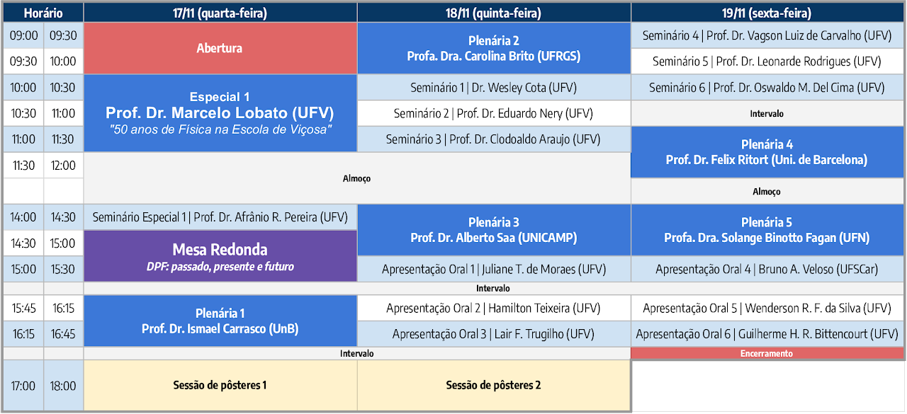

Livro de Resumos do III Simpósio da Pós-Graduação em Física/UFV
17 a 19 de novembro de 2021
Programa de Pós-Graduação em Fìsica da Universidade Federal de Viçosa (UFV) | ufv2021.simposiofisica.com
O Programa de Pós-Graduação em Física da UFV realiza nos dias 17, 18 e 19 de novembro de 2021 o III Simpósio da Pós-Graduação em Física - UFV. O objetivo deste simpósio é promover a troca de experiência entre estudantes e reconhecidos pesquisadores do cenário nacional. O evento tem como público alvo estudantes de graduação e de pós-graduação do curso de Física e áreas afins. As atividades propostas para o simpósio incluem palestras por professores convidados, apresentações orais de discentes, sessão de pôsteres e mesa-redonda. Essa versão foi também comemorativa de 50 anos do Departamento de Física e 20 anos do Programa de Pós-Graduação em Física da UFV.
Cronograma

Plenária Especial
PE-01 – 50 anos de Física na Escola de Viçosa (Marcelo Lobato Martins)
Marcelo Lobato Martins, Universidade Federal de Viçosa (UFV) | mmartins@ufv.br
Seminário Especial
SE-01 – A emergência da Física nos rincões de Minas (Afranio Rodrigues Pereira)
Afranio Rodrigues Pereira, Universidade Federal de Viçosa (UFV) | apereira@ufv.br
Mesa Redonda
ME-01 – DPF: passado, presente e futuro (III Simpósio da Pós-Graduação em Física)
Marcelo Lobato Martins, Universidade Federal de Viçosa (UFV) | mmartins@ufv.br Afranio Rodrigues Pereira, Universidade Federal de Viçosa (UFV) | apereira@ufv.br Orlando Pinheiro da Fonseca Rodrigues, Universidade Federal de Viçosa (UFV) | ofonseca@ufv.br
Convidados Externos
CE-01 – Subdivisão de classes de universalidade em fenômenos de crescimento (Ismael Segundo da Silva Carrasco)
Ismael Segundo da Silva Carrasco, Universidade de Brasília (UnB) | ismael.carrasco@unb.br
A dinâmica de interfaces se faz presente em uma ampla gama de fenômenos, desde sistemas biológicos, como a borda de colônias de células, até crescimentos de filmes finos. Apesar da grande diferença entre esses diversos sistemas, se verifica que interfaces de contextos completamente distintos, eventualmente, possuem propriedades estatísticas similares, dando origem ao conceito de classes de universalidade. Essas classes englobam um conjunto grande de interfaces que compartilham simetrias nos mecanismos microscópicos responsáveis por sua dinâmica global. Em torno dos anos 2000, houve uma grande revolução nesta área, quando resultados teóricos indicaram que a classe de Kardar-Parisi-Zhang (KPZ) se subdivide de acordo com a geometria, visto que algumas propriedades universais são distintas entre interfaces curvas e planas. Todavia, como essas demonstrações são válidas no regime de sistemas muito grandes, e as interações dos constituintes elementares desses sistemas é de curto alcance, propusemos que a curvatura da superfície deveria ser irrelevante para a dinâmica das pequenas partículas que constituem a interface. Através de simulações computacionais, mostramos que a curvatura realmente não é o principal fator por trás da subdivisão da classe KPZ, mas sim a dinâmica do perímetro da interface. Mais especificamente, demonstramos que essa subdivisão é consequência da competição entre a velocidade de propagação das correlações na superfície versus a velocidade com que o perímetro da interface cresce. Esse avanço teórico nos permitiu explorar diferentes questões em aberto, inclusive resolver uma controvérsia entre resultados experimentais, que era consequência da interpretação equivocada de que a curvatura da superfície define sua subclasse. Também verificamos que essa subdivisão aparece em todas as classes de universalidade, ao invés de ser algo restrito a classe KPZ.
CE-02 – Superfície molhada ou seca: é possível prever? (Carolina Brito)
Carolina Brito, Universidade Federal do Rio Grande do Sul (UFRGS) | carolina.brito@ufrgs.br
Ao depositar uma gota de água em uma superfície, é possível que ela molhe a superfície parecendo um filme ou que fique bem para fora parecendo uma esfera. A estes estados são associados a noção de hifrofilia e hidrofobia. Algumas superfícies apresentam meta-estabilidade: dependendo da maneira como a gota é depositada, mais de um estado de molhabilidade pode acontecer. Quais propriedades de superfícies dão origem a estes comportamentos? Como caracterizar e entender a passagem de um estado para outro? Neste seminário eu vou discutir estes fenômenos e apresentar um modelo teórico e simulações que nos permitem explorar este comportamento.
CE-03 – Viajando à velocidade do pensamento: breve história das ondas gravitacionais (Alberto Saa)
Alberto Saa, Universidade Estadual de Campinas (UNICAMP) | asaa@ime.unicamp.br
No dia 14 de setembro de 2015, uma data singular como veremos, foram detectados na terra, pela primeira vez, os sinais de ondas gravitacionais provenientes da colisão de dois buracos negros ocorrida há um bilhão de anos atrás. Consideradas inicialmente como desprovidas de sentido físico, as ondas gravitacionais foram tema de muitos debates ao longo do século XX, vários deles um tanto acalorados, alguns envolvendo o próprio Einstein, quem, por certo, mudou de ideia mais de uma vez com relação à realidade física dessas previsões de sua teoria da Relatividade Geral. Nesta apresentação, será feita uma breve revisão, em nível elementar, dos principais e mais curiosos detalhes científicos, técnicos e históricos desta fantástica saga da Física contemporânea.
CE-04 – Manipulating molecules one at a time: a new research frontier in science (Felix Ritort)
Felix Ritort, Universitat de Barcelona (UB/Espanha) | ritort@ub.edu
“Take a single DNA molecule and pull from its extremities while recording the force-extension curve until it gets fully straightened.” This thought experiment, which was just a dream a few decades ago, has become standard in many research labs worldwide. Force spectroscopy techniques (such as laser optical tweezers) are a fabulous tool for manipulating and monitoring biological molecules’ direct action at the individual level. By measuring forces in the piconewton range and energies roughly equivalent to 1kT, we have the experimental accuracy in resolving the thermal energy unit. Recent advances in such technologies combined with theoretical developments in nonequilibrium physics offer the exciting prospect of experimentally testing fundamental physical principles and concepts in single-molecule experiments [1]. This talk will illustrate laser optical tweezers for single-molecule manipulation and some of the main applications in physics and biology. In particular, I will also present results on a Maxwell demon’s experimental realization using single DNA molecules pulled under feedback protocols as a pioneering example of the thermodynamics of data processing and information [2,3].
F. Ritort, The noisy and marvelous molecular world of biology, Inventions, 4(2) (2019) 24
M. Ribezzi-Crivellari and F. Ritort, Large work extraction and the Landauer limit in the Continuous Maxwell Demon, Nature Physics 15 (2019) 660–664
M. Rico-Pasto, R. K. Schmitt, M. Ribezzi-Crivellari, J. M. R. Parrondo, H. Linke, J. Johansson and F. Ritort, Dissipation Reduction and Information-to-Measurement Conversion in DNA Pulling Experiments with Feedback Protocols, Physical Review X, 11, 031052 (2021).
CE-05 – Nanoestratégias para adsorção de sistemas de interesse biológico e ambiental (Solange Binotto Fagan)
Solange Binotto Fagan, Universidade Franciscana (UFN) | sfagan@ufn.edu.br
Esta Palestra abordará o estudo de nanoestruturas, puras ou funcionalizadas, tais como grafeno, fosforeno negro e azul e respectivas nanofitas. Os nanomateriais são avaliados para uso como nanoestratégias de adsorção de fármacos, vitaminas e outras estruturas de interesse biológico ou como sistemas remediadores ambientais para remoção de sistemas poluentes presentes no meio ambiente. Os resultados que apresentaremos são obtidos por meio de simulações com potenciais ab initio avaliando suas propriedades físicas e químicas, tais como estruturas químicas mais estáveis, comportamento eletrônico e magnético. Em alguns estudos utilizamos os dados experimentais de grupos colaboradores para corroborar as análises obtidas teoricamente e permitir resultados inovadores para o avanço da nanociência e da nanotecnologia.
Convidados Internos
CI-01 – Modelagem orientada por dados do espalhamento de doenças infecciosas em populações (Wesley Cota)
Wesley Cota, Universidade Federal de Viçosa (UFV) | wlcota@gmail.com
Modelos dirigidos por dados são desenvolvidos para aprimorar a acurácia espaço-temporal de previsões epidemiológicas de surtos de doenças infecciosas em populações humanas, como no caso do H1N1, SARS, Ebola e, recentemente, COVID-19. Tanto a mobilidade humana e os padrões de contato são aspectos cruciais do nosso comportamento social que determinam como doenças infecciosas se espalham por diferentes regiões. O movimento de pessoas de um local para outro pode ser descrito por meio de redes complexas, incorporando matematicamente os dados sociais necessários para a modelagem de surtos epidêmicos com resolução espacial, incluindo a distribuição demográfica de populações reais, a natureza recorrente dos movimentos humanos e a heterogeneidade dos contatos sociais. Neste seminário, serão apresentados exemplos desse tipo de modelagem, abordando tanto os aspectos teóricos da explicação microscópica de como determinados fenômenos emergem nesses sistemas [1], quanto como essas ferramentas puderam e podem ser utilizadas para estudar pandemias como a da COVID-19 no Brasil [2] e na Espanha [3].
Referências:
[1] W. Cota et al. “Infectious disease dynamics in metapopulations with heterogeneous transmission and recurrent mobility”. New Journal of Physics 23 073019 (2021)
[2] G. S. Costa, W. Cota, S. C. Ferreira. “Outbreak diversity in epidemic waves propagating through distinct geographical scales”. Physical Review Research 2, 043306 (2020)
[3] A. Arenas et al. “Modeling the spatiotemporal epidemic spreading of COVID-19 and the impact of mobility and social distancing interventions”. Physical Review X 10, 041055 (2020)
CI-02 – Efeitos fotoinduzidos em nanomateriais à base de Te (Eduardo Nery Duarte de Araújo)
Eduardo Nery Duarte de Araújo, Universidade Federal de Viçosa (UFV) | eduardo.araujo@ufv.br
Recentemente os dicalcogenetos de metais de transição (TMDs) têm se destacado dentro da classe dos materiais 2D, tanto em estudos referentes às suas propriedades fundamentais quanto nas aplicações tecnológicas. Ao ir do material bulk para a monocamada, há uma transição do gap de energia indireto para o direto, conferindo propriedades elétricas e ópticas únicas aos TMDs em poucas camadas. Esta capacidade de ajustar o gap de energia dos TMDs leva a uma intensa fotoluminescência para poucas camadas, qualificando esses materiais como promessas para aplicações em dispositivos de optoeletrônica em nanoescala. A exposição dos TMDs à luz visível promove mudanças fotoinduzidas, tanto reversíveis quanto permanentes, nos diferentes polimorfos desses materiais. Os mecanismos por trás das mudanças de fase ainda são amplamente debatidos na literatura. Enquanto alguns grupos afirmam que o aquecimento da superfície da amostra é o responsável pelas transições de fase, outros autores argumentam que a excitação eletrônica tem uma contribuição importante na transição metal-semicondutor nos TMDs. Além dos estudos acadêmicos por trás deste fenômeno, ele traz como perspectiva tecnológica a aplicação dos TMDs na produção de memórias fotossensíveis. Neste trabalho serão apresentados avanços recentes na síntese e caracterização de diferentes nanomateriais à base de Te na UFV, que tem contribuído para o entendimento do fenômeno de mudança de fase fotoinduzida nos TMDs.
Palavras-Chave: Dicalcogenetos de Metais de Transição, Optoeletrônica, Materiais 2D; Fotomemórias, Fotocristalização; Efeitos Fotoinduzidos
Referências bibliográficas
[1] Cho, S., Kim, S., Kim, J. H., Zhao, J., Seok, J., Keum, D. H., e Yang, H. (2015). Phase patterning for ohmic homojunction contact in MoTe 2. Science, 349(6248), 625-628.
[2] Kolobov, A. V., Fons, P., e Tominaga, J. (2016). Electronic excitation-induced semiconductor-to-metal transition in monolayer MoTe 2. Physical Review B, 94(9), 094114.
[3] Sanchez-Montejo, E.; Santana, G.; Domínguez, A.; Huerta, L.; Hamui, L.; Lopez-Lopez, M.; e González, J. C. Phase stability in MoTe 2 prepared by low temperature Mo tellurization using close space isothermal Te annealing. Materials Chemistry and Physics, 198, 317-323 (2017).
[4] de Melo, O.; Pelayo, L. G.; Hernández, Y. L. G.; Concepción, O.; Silvan, M. J. M.; Nebreda, R. L.; e Torres-Costa, V.; Chemically driven isothermal closed space vapor transport of MoO2: thin films, flakes and in-situ tellurization. Journal of Materials Chemistry C 6, 6799 (2018).
CI-03 – Nano-estruturação da futura supercomputação (Clodoaldo Irineu Levartoski de Araujo)
Clodoaldo Irineu Levartoski de Araujo, Universidade Federal de Viçosa (UFV) | dearaujo@ufv.br
A dinâmica atual de processamento e armazenamento de informações em dispositivos eletrônicos é baseada nas máquinas de Turing com arquitetura de von Neumann. Nesta arquitetura, a informação tem que ser transportada entre a unidade central de processamento (CPU) e a unidade de memória. Este transporte sucessivo, mais lento do que a velocidade de processamento das CPU, causa o chamado gargalo de von Neumann, que limita consideravelmente a evolução da velocidade de processamento e ocasiona alto custo energético. Além disso, os transistores e memórias utilizadas nestas arquiteturas são baseados em efeitos capacitivos em interfaces semicondutoras, e por isso tem sua escalabilidade (densidade) limitada. Projetado pela IBM, o mais rápido supercomputador do mundo, OLC f4 AKA Summit, utiliza 13 megawatts para realizar 200 quatrilhões de cálculos por segundo (200 petaflops), enquanto o cérebro humano realiza cinco vezes mais, 1 quintilhão de cálculos por segundo (1 exaflop), consumindo apenas 20 watts. Neste seminário discutiremos propostas para utilização de materiais magnéticos nanoestruturados, tanto para possível substituição da tecnologia do silício, como para sua aplicação como elemento central em arquitetura similar à do cérebro, na emergente área da computação neuromórfica.
CI-04 – Curvatura e magnetismo: sobre paredes de domínio em nanofios dobrados (Vagson Luiz de Carvalho Santos)
Vagson Luiz de Carvalho Santos, Universidade Federal de Viçosa (UFV) | vagson.santos@ufv.br
Efeitos de curvatura sobre propriedades magnéticas de nanoestruturas magnéticas têm chamado cada vez mais a atenção de pesquisadores na área de magnetismo. De fato, diversos trabalhos teóricos e experimentais têm demonstrado como a geometria de uma nanopartícula afeta as propriedades estáticas e dinâmicas da magnetização. Dentre esses efeitos, pode-se destacar o aparecimento de interações efetivas induzidas por curvatura, tais como anisotropia e Dzyloshinskii-Moriya (DM). Nesse seminário, será apresentado o caso particular de fenômenos magnéticos induzidos por curvatura ao introduzir dobras em nanofios cilíndricos (NC) e nanofitas (NF). Entender as propriedades de NC e NF é relevante, pois esses sistemas têm sido considerados como componentes em diferentes aplicações. Muitas dessas aplicações demandam o controle preciso da dinâmica de paredes de domínio (PD) sob a ação de diferentes estímulos. Assim, será mostrado que o comportamento das PDs em elementos curvos é modificado quando comparado com nanoestruturas retas.
CI-05 – Nanomembranas semicondutoras e microcavidades tubulares e suas potenciais aplicações (Leonarde Rodrigues)
Leonarde Rodrigues, Universidade Federal de Viçosa (UFV) | leonarde.rodrigues@ufv.br
Na última década, uma nova e promissora classe de estruturas semicondutoras bidimensionais tem atraído a atenção da comunidade científica. Tais estruturas são chamadas de nanomembranas semicondutoras. Essa classe de materiais explora efeitos da tensão elástica a que o material pode estar submetido. A engenharia de tensão elástica é um método utilizado para alterar a estrutura de banda do material e controlar suas propriedades básicas. Tal abordagem tem sido utilizada para alterar propriedades de estruturas semicondutoras do grupo III-V, controlar propriedades ópticas de estruturas quânticas integradas a membranas, produzir substratos virtuais com parâmetro de rede modulado e fabricar dispositivos híbridos mediante a transferência das membranas para outros tipos de substratos/materiais. Adicionalmente, as nanomembranas enroladas (geometria tubular), fabricadas via a liberação de camadas tensionadas, têm sido desenvolvidas em diversas frentes de fabricação de tecnologia. Potenciais aplicações como uma eletrônica integrada baseada em dispositivos tubulares e ressonadores ópticos para aplicações em lasers têm sido investigadas. Seu estado híbrido de tensão e compressão ao longo da direção radial do tubo permite controlar propriedades fundamentais de estruturas nanométricas sem a necessidade de aplicação de um potencial externo, já que novos efeitos estão associados à sua inerente configuração tubular. O presente seminário busca abordar resultados recentes desse tópico e as possibilidades de trabalho no Departamento de Física da UFV envolvendo esse tema.
CI-06 – A eletrodinâmica quântica planar e tudo o mais (Oswaldo Monteiro Del Cima)
Oswaldo Monteiro Del Cima, Universidade Federal de Viçosa (UFV) | oswaldo.delcima@ufv.br
A eletrodinâmica quântica em três dimensões espaço-temporais tem sido usada, desde os trabalhos pioneiros da década de 1980 de Deser, Jackiw, Schonfeld e Templeton, como base teórica na descrição de fenômenos quase planares em matéria condensada, tais como supercondutores de alta temperatura crítica, efeito Hall quântico, isolantes topológicos, semimetais de Weyl, supercondutores topológicos e grafeno.
Apresentações Orais
A-01 – Multifunctional Webcam Spectrophotometer for Performing Analytical Determination and Measurements of Emission, Absorption, and Fluorescence Spectra (Wenderson Rodrigues Fialho da Silva)
Wenderson Rodrigues Fialho da Silva, Universidade Federal de Viçosa (UFV) | wenderson.f@ufv.br
Autores: Wenderson R. F. Silva - Universidade Federal de Viçosa (UFV), Willian T. Suarez - Universidade Federal de Viçosa (UFV), César Reis - Universidade Federal de Viçosa (UFV), Efraim L. Reis - Universidade Federal de Viçosa (UFV).
This abstract reports the development and application of a low-cost multifunctional webcam spectrophotometer for the conduct of molecular absorption and fluorometric measurements. The equipment, which costs approximately US$20 to be fabricated, consists of a webcam, a diffraction grating, and a slit, all positioned inside an MDF box. Spectral measurements were carried out using the multifunctional equipment with the aid of a free software. The equipment was found to be suitable for conducting qualitative and quantitative analyses of fluorescence, absorption, and emission spectra and for analytical determinations in the spectral range of 380.00 to 1000.00 nm with 0.8 nm resolution. By simply changing the light radiation source, the equipment allowed us to determine the thermodynamic equilibrium constant of Alizarin Red S (1,2-dihydroxyanthraquinone-3-sodium sulfonate) and to obtain the fluorescence spectra of chlorophyll and anthocyanins (two natural pigments). The apparatus was calibrated with a standard spectrometer, both for fluorescence measurements and for absorbance measurements. The multifunctional spectrophotometer allows one to perform real-time spectral analysis, offers an easy and fast calibration process, is lightweight, compact, and robust, it can be taken to the classroom and can be used for performing of chemical and physical experiments, aimed at enriching the study of molecular spectrophotometry. A further advantage of the equipment lies in the fact that it can be easily built. The equipment was also applied in teaching environments, conducted for a class of 30 students from high school and in a science fair, to aid them in learning chemistry and physics. This work was published in the journal “Journal of Chemical Education”, 98, 4, 1442–1447 (2021) and can be consulted at: https://doi.org/10.1021/acs.jchemed.0c01085.
A-02 – Shape-free kinetic theory applied to thermally induced macromolecular aggregation in finite-size systems (Lair Figueiredo Trugilho)
Lair Figueiredo Trugilho, Universidade Federal de Viçosa (UFV) | lair.trugilho@ufv.br
Autores: Lair Figueiredo Trugilho - Universidade Federal de Viçosa (UFV)
Leandro Gutierrez Rizzi - Universidade Federal de Viçosa (UFV)
Temperature-dependent self-assembly processes in finite size volumes, i.e., spontaneous collective organization of a limited number of individual subunits, are present in a vast number of physical and biological systems, including those that involve macromolecular aggregation, protein folding and micellar assembly. In this way, kinetic theories of such processes are of particular interest for different scientific areas, including material science and soft matter physics. Most of the current theoretical approaches are based on the classical nucleation theory and depend on assumptions about the shape of the forming aggregates, usually assumed to be spherical. However, this kind of assumption may not be appropriate for some finite-size systems, like polymer and colloidal solutions. In this work we consider a simple aggregation model [1] in order to illustrate the shape-free kinetic theory recently proposed in references [2,3]. This theory relates equilibrium thermostatistics properties, such as latent heats and free-energy barriers, to the temperature-dependent rate constants. We perform stochastic simulations at different temperatures, from which the rate constants can be numerically evaluated, and show that the temperature-dependent rates estimated by our kinetic approach are in good agreement with the results obtained from the simulations. Since the kinetic theory discussed here is model independent, it may be applied to more complex systems and provide experimentalists a useful method to reconstruct microcanonical entropies from kinetic data.
[1] L. F. Trugilho, L. G. Rizzi. Microcanonical characterization of first order phase transitions in a generalized model for aggregation (Submitted, 2021).
[2] L. G. Rizzi. Kinetics of first order phase transitions from microcanonical thermostatistics. J. Stat. Mech. 083204 (2020).
[3] L. F. Trugilho, L. G. Rizzi. Shape-free theory for the self-assembly kinetics in macromolecular systems. Submitted (2021).
A-03 – Transístor quântico em sistema de qubits supercondutores (Bruno Augusto Veloso)
Bruno Augusto Veloso, Universidade Federal de São Carlos (UFSCar) | brunoavn@df.ufscar.br
Autores: Bruno A. Veloso - Universidade Federal de São Carlos (UFSCar)
Alan C. Santos - Universidade Federal de São Carlos (UFSCar)
Romain Bachelard - Universidade Federal de São Carlos (UFSCar)
Celso J. Villas-Bôas - Universidade Federal de São Carlos (UFSCar)
A computação quântica tem se mostrado um campo extremamente promissor, com diversos avanços nos últimos anos e a promessa de revolucionar a computação, ao aumentar a velocidade e a capacidade de processamento a níveis muitíssimo além dos maiores supercomputadores atuais. Entre os principais sistemas físicos disponíveis atualmente para a construção destes dispositivos, podemos destacar átomos artificiais construídos em circuitos supercondutores, que nos permite criar os chamados qubits (sistemas quânticos de dois níveis) supercondutores. Com a tecnologia atual é possível criar chips quânticos de muitos qubits e usá-los para realizar tarefas preditas pela computação quântica. Neste trabalho, nós apresentamos resultados obtidos em um sistema composto de dois qubits de acoplamento controlável por meio de um loop supercondutor que conecta os dois qubits. Embora usemos o sistema como qubit, mostramos que ao considerar a existência do terceiro nível de cada átomo a dinâmica do sistema é drasticamente afetada em casos particulares, mas que são de fundamental importância para o desenvolvimento de tecnologias como os transistores quânticos supercondutores. Nossos resultados revelam uma importância fundamental que os níveis mais excitados do sistema desempenham em sua própria dinâmica, mesmo que tais estados nunca sejam populados. Tais resultados obtidos teoricamente foram comprovados experimentalmente e com grande concordância entre teoria e experimento. Como uma aplicação prática, foi realizado o primeiro experimento de um transístor quântico em circuitos supercondutores, mostrando-se um sistema promissor para futuras aplicações em processadores quânticos.
A-04 – Curvature-induced emergence of a second critical field for domain wall dynamics in bent nanostripes (Guilherme Henrique Rezende Bittencourt)
Guilherme Henrique Rezende Bittencourt, Universidade Federal de Viçosa (UFV) | guilherme.bittencourt@ufv.br
Autores: Guilherme Henrique Rezende Bittencourt - Universidade Federal de Viçosa (UFV)
Roberto Moreno - Earth and Planetary Science, School of Geosciences, University of Edinburgh, Edinburgh EH9 3FE, UK
Rafael Cacilhas - Universidade Federal de Viçosa (UFV)
S. Castillo-Sepúlveda - Universidad Autónoma de Chile, 7501012, Santiago, Chile
O. Chubykalo‐Fesenko - Instituto de Ciencia de Materiales de Madrid, CSIC, Cantoblanco, 28049 Madrid, Spain
Dora Altbir - Departamento de Física, CEDENNA, Universidad de Santiago de Chile, 9170124, Santiago, Chile
Vagson Luiz de Carvalho Santos - Universidade Federal de Viçosa (UFV)
We investigate the dynamics of a transverse domain wall (DW) in a bent nanostripe under an external field and spin-polarised current. Besides the standard Walker breakdown phenomenon, we show the emergence of a second Walker-like critical field, which depends on both the curvature of the nanostripe and its cross-section geometry. At this field, DW can change its phase, i.e, can be re-oriented along another direction with respect to the nanostripe face. Additionally, we show that the amplitude and frequency of the DW oscillations above the Walker breakdown field also depend on the nanostripe geometry and can be controlled by external stimuli. Our results evidence that the inclusion of local curvatures in nanostripes is an important component for applications that demand an adequate control of the DW phase by the proper choice of external stimuli.
A-05 – Controle de correntes de spins e elétrons polarizados em spins em canais de grafeno (Hamilton Teixeira)
Hamilton Teixeira, Universidade Federal de Viçosa (UFV) | hamilton.teixeira@ufv.br
Autores: Hamilton Aparecido Teixeira- Universidade Federal de Viçosa (UFV)
Clodoaldo. I. L. de Araujo - Universidade Federal de Viçosa (UFV)
Oscar. O. Toro - Universidade Federal de Viçosa (UFV)
D. Schafer- INL-Universidade Federal de Santa Catarina
I. Brandt-INL-Universidade Federal de Santa Catarina
R. Ferreira-INL-International Iberian Nanotechnology Laboratory
P. Alpuim-INL-International Iberian Nanotechnology Laboratory
Paulo P. Freitas-INL-International Iberian Nanotechnology Laboratory
André. A. Pasa- Universidade Federal de Santa Catarina
Os avanços tecnológicos em processadores exigem cada vez mais otimização da relação tamanho desempenho dos transistores e explorar o momento magnético intrínseco dos elétrons, o spin, é uma alternativa as atuais tecnologias. A construção de dispositivos baseados em spins foi iniciada com a descoberta da magnetorresistência gigante (MRG) que abriu as portas para a spintrônica, com possibilidade de produzir e utilizar correntes de spins puras e de elétrons polarizados para gerar e transportar informações. Em 1990 Datta e Das propuseram o transistor baseado em correntes de spins (Spin FET), onde a polarização dos spins é controlada por interação spin-orbita, através de um campo elétrico externo. No spin FET dois terminais compostos por materiais ferromagnéticos (Fonte e Dreno) injetam e leem as correntes de spins polarizadas. O Canal que conecta a fonte ao dreno deve ser de material que conserva a orientação de spin. O terceiro terminal chamado de Gate permite controlar a orientação dos spins, impondo-lhes orientação paralela ou antiparalela à do dreno. Desde a proposta do spin-Fet a corrida experimental para sua construção foi iniciada. Neste trabalho apresentamos a construção e caracterização de um Spin-Fet. Os contatos ferromagnéticos são de permalloy e o canal de grafeno. Litografia ótica foi a técnica utilizada para definir os terminais. As caracterizações mostraram sucesso na injeção de spins polarizados no canal. As medidas de magnetorresistência túnel local e não local foram obtidas variando a temperatura entre 15K e 300K. A 15K os resultados mostram MRG similares nas duas temperaturas. Já em 300K os valores da MRG locais são menores devido a interação com os fônos do canal. Obtivemos também a primeira evidência de controle da corrente pura e polarizada de spins em canais de grafeno. O valor de 7micrometros obtido para o comprimento de difusão do grafeno vai de encontro aos melhores resultados encontrados na literatura.
A-06 – Criticality in time series of epidemic prevalence through visibility graphs (Juliane Teixeira de Moraes)
Juliane Teixeira de Moraes, Universidade Federal de Viçosa (UFV) | juliane.moraes@ufv.br
Autores: Juliane Teixeira de Moraes - Universidade Federal de Viçosa (UFV)
Silvio da Costa Ferreira Junior - Universidade Federal de Viçosa (UFV)
Time series emerge from diverse types of real systems. We can find sequences of ordered data in the values of exchanges in the financial market, in sea surface temperature, in the brain electrical activity, and many other examples. However, time series analysis is not simple because the available data are often not ideal in quality and quantity. A modern method of time series analysis is to map them onto complex networks and analyze these structures. In this work, we have used a tool called visibility graph to transform time series into complex networks. This method can be used, in principle, for any type of univariate time series, but the application which we have chosen is related to spreading processes. Knowledge of the network structure in which the disease spreads can be very important to understand the spreading evolution. We studied the susceptible-infected-susceptible (SIS) model for different structures: square lattices, random regular networks, and networks with power-law degree distributions. Using quasistationary methods, we generate the time series of epidemic prevalence, which are the fraction of infected individuals in the population as a time function. We mapped these time series onto visibility graphs and calculated some quantities of complex network analysis in order to study them, such as the degree distribution, clustering coefficient, degree correlation, and shortest average path length. We could present strong evidence that the visibility graph is able to distinguish behaviors near and far from the transition, and also to discriminate between activation mechanisms related to the original networks in which the dissemination process takes place.
Pôsteres
P-01 – Efeito da concentração de Mn nos modos vibracionais em ligas de CdMnTe (Thamires Cordeiro Soares)
Thamires Cordeiro Soares, Universidade Federal de Viçosa (UFV) | thamires.soares@ufv.br
Autores: Thamires C. Soares - Universidade Federal de Viçosa (UFV)
Paulo Victor Schimmarella - Universidade Federal de Viçosa (UFV)
Sukarno O. Ferreira - Universidade Federal de Viçosa (UFV)
Luciano de Moura Guimarães - Universidade Federal de Viçosa (UFV)
Eduardo Nery D. de Araujo - Universidade Federal de Viçosa (UFV)
O CdTe é um semicondutor do grupo II-VI que apresenta gap direto de energia de \approx 1,5 eV, correspondendo a um \lambda\approx 827 nm, que permite a este material absorver fótons na região visível de luz e o torna uma opção para aplicação em células fotovoltaicas [1].
A inclusão de impurezas magnéticas nos semicondutores deste grupo introduz tanto propriedades magnéticas como semicondutoras controláveis e são classificados como semicondutores magnéticos diluídos (SMD).
Um exemplo de material dessa classe é o \text{Cd}_{1-x}\text{Mn}_{x}\text{Te} (CMT) que é estudado neste trabalho, onde x representa a fração molar de manganês [2]. As propriedades químicas e estruturais do CMT foram verificadas via espectroscopia por dispersão de energia (EDS), difração de raios-X (DRX) e espectroscopia Raman.
O EDS contribuiu para a quantificação das concentrações de Mn em cada amostra e o DRX para obter o parâmetro de rede. A espectroscopia Raman possibilitou a comparação das posições dos picos referentes aos modos LO1 CdTe-like e LO2 MnTe-like, utilizando duas linhas de laser de comprimento de onda diferentes, uma de 514 nm e a outra de 633 nm. Dentre essas medidas, verificou-se que acontece, respectivamente, um redshift e um blueshift dos modos longitudinais ópticos do CdTe e MnTe em função da [x]. Observou-se uma que a correlação de tal comportamento depende do comprimento de onda do laser de excitação. Esse resultado sugere uma dependência do termo de polarização do meio com a energia do fóton incidente.
Referências
[1] SINGH, Jasprit. Electronic and Optoelectronic Properties of Semiconductor Structures. Cambrigde University Press, 116, 2003.
[2] FENG, ZC and Perkowitz, S and Dubowski, JJ. Raman scattering studies of \text{Cd}_{1-x}\text{Mn}_{x}\text{Te} films grown on GaAs by pulsed laser evaporation and epitaxy. Journal of Applied Physics, vol. 69; 7782-7787, 1991.
P-02 – O Monopólo Magnético de Nambu (Victória Ramos de Oliveira)
Victória Ramos de Oliveira, Pontifícia Universidade Católica do Rio de Janeiro (PUC-Rio) | victoria.ramosoliveira@aluno.puc-rio.br
Autores: Victória Ramos de Oliveira - Pontifícia Universidade Católica do Rio de Janeiro (PUC-Rio)
Oswaldo Monteiro Del Cima - Universidade Federal de Viçosa (UFV)
Daniel Oliveira Rocha Azevedo - Universidade Federal de Viçosa (UFV)
Milena Lima Bispo - Universidade Federal de Viçosa (UFV)
O eletromagnetismo esta há muito tempo incorporado no cotidiano da sociedade e forma as bases de toda tecnologia desenvolvida até hoje. No entanto, diferentemente do que se esperaria, ainda não temos um entendimento completo da teoria e existem questões elementares a serem resolvidas, como por exemplo a existência de monopólos magnéticos. Não existe, até o momento, nenhuma explicação teórica para a não existência dos mesmo e a eletrodinâmica clássica não só não proíbe sua existência como sua descoberta traria simetria às equações de Maxwell. A ideia de cargas magnéticas isoladas parecia incompatível com a mecânica quântica, uma vez que os campos eletromagnéticos devem ser descritos em termos dos potenciais escalar e vetor. E, a definição do potencial vetor, a princípio, excluí a possibilidade do campo magnético possuir termos de fonte. Essa inconsistência foi resolvida em 1931 pelo físico britânico Paul Dirac em seu trabalho revolucionário, onde demonstrou que a definição do potencial vetor não proíbe a existência de monopólos magnéticos e associou a existência dos mesmos à quantização da carga elétrica. No modelo de Dirac, cada pólo norte magnético estaria conectado a um pólo sul magnético através de uma linha de singularidade, a String de Dirac. Neste trabalho apresentaremos um estudo sobre monopólos magnéticos fundamentais e suas buscas experimentais. Partindo do trabalho de P. A. M. Dirac de 1931, e fazendo uma apresentação do modelo e suas características, como a presença de strings e a quantização da carga. Além disso, também é discutido brevemente o trabalho de Y. Nambu de 1974, e a proposta do “Átomo de Nambu”, que seria um estado de duas partículas de cargas magnéticas opostas (monopólos) interagindo via um potencial baseado na proposta de Nambu. E por fim, um estudo sobre estados espalhados e espalhamento para potenciais do tipo Coulomb, com o espalhamento de Rutherford, e do tipo Yukawa, utilizando teoria quântica de espalhamento e aproximação de Born.
P-03 – Formulação de calibre para monopolos magnéticos com distribuições vetoriais (Gabriel Alves de Oliveira)
Gabriel Alves de Oliveira, Universidade Federal de Viçosa (UFV) | gabriel.oliveira7@ufv.br
Autores: Gabriel Alves de Oliveira - Instituição na época do trabalho: Universidade Federal de Itajubá (UNIFEI) - Instituição atual: Universidade Federal de Viçosa (UFV)
Fabrício Augusto Barone Rangel - Universidade Federal de Itajubá (UNIFEI)
Frederico Eduardo Barone Rangel - Centro Brasileiro de Pesquisas Físicas (CBPF)
José Abdalla Helayël-Neto - Centro Brasileiro de Pesquisas Físicas (CBPF)
Uma das descrições mais utilizadas na literatura para descrever um monopolo magnético é feita considerando o monopolo como a extremidade de uma corda de Dirac. No entanto, essa descrição não é capaz de reproduzir o campo magnético gerado em todo o espaço, uma vez que o potencial vetor é mal definido sob o eixo no qual a corda se situa. Tal problema pode ser solucionado se utilizamos duas cartas para mapear o espaço, uma onde a corda se situa sob o semi-eixo z positivo e outra onde a corda se situa sob o semieixo z negativo. Porém, em cada uma das cartas teremos que excluir uma parte do eixo z. Neste trabalho iremos propor um único potencial global que descreva o campo de um monopolo magnético em todo o espaço, acrescentando uma contribuição adicional dada por uma distribuição vetorial ao potencial da corda, de forma à eliminar a divergência encontrada anteriormente, descartando assim a necessidade de se utilizar duas cartas.
P-05 – Non-linear effects of social contact patterns and infection fatality ratio on vaccine prioritization strategies (Arthur Schulenburg)
Arthur Schulenburg, Universidade Federal de Viçosa (UFV) | arthur.schulenburg@ufv.br
Autores: Arthur Schulenburg - Universidade Federal de Viçosa (UFV)
Wesley Cota - Universidade Federal de Viçosa (UFV)
Guilherme S. Costa - Universidade Federal de Viçosa (UFV)
Silvio C. Ferreira - Universidade Federal de Viçosa (UFV)
Since the first case of infection by Severe Acute Respiratory Syndrome Coronavirus 2 (SARS-CoV-2) was confirmed in Wuhan, in December 2019, the COVID-19 disease has spread around the world, being declared a pandemic in March 2020. By the end of March 2021, Brazil has already surpassed the mark of 12 million cases, and more than 312 thousand deaths. Despite efforts adopted since 2020, the only long-term measure to stop the pande- mic progress is the vaccination. The dynamics of SARS-CoV-2 follows a behavior similar to other diseases, which can be studied through compartmental epidemiologic models. In these models, individuals are grouped into compartments, such as susceptible, infected and recovered. We propose a refined model to qualitatively study the dynamics of SARS-CoV-2, including compartments considering the heterogeneity contact matrices stratified according age. We studied the effect of vaccination on the disease dynamics, with compartments for vaccinated individuals and transitions rates based on real data obtained for Brazil. We in- vestigated different vaccinations strategies in priority and non-priority groups. The results include qualitative analyzes comparing different vaccinations rates, reproduction number R0, that accounts for the number of secondary cases generated by one infected individual. We also consider different hypothetical epidemic scenario, as well as the effects on vaccination delays from beginning of the pandemic. One of the main results we observed is that the optimal vacci- nation strategy, witch reduces death more effectively, depends on R0 and the vaccination rate.
P-06 – Desenvolvimento de um densímetro utilizando uma balança digital de baixo custo e seu uso para medidas de sólidos e líquidos (Wenderson Rodrigues Fialho da Silva)
Wenderson Rodrigues Fialho da Silva, Universidade Federal de Viçosa (UFV) | wenderson.f@ufv.br
Autores: Wenderson R. F. Silva - Universidade Federal de Viçosa (UFV) e Jakson M. Fonseca - Universidade Federal de Viçosa (UFV)
A caracterização de materiais é um importante passo no conhecimento de suas propriedades, seja em dispositivos eletrônicos, ópticos, mecânicos ou mesmo de uso cotidiano, e a densidade muitas vezes é um dos primeiros testes nesse processo, que pode ser muito caro e complexo. Esse trabalho teve como objetivo mostrar como uma balança digital de baixo custo com precisão de centésimos de grama e alguns aparatos simples como, béquer, suporte, arames, saco plástico e água podem ser utilizados para se medir a densidade de sólidos e líquidos. Para isso, foram deduzidas três equações para o cálculo da densidade dos materiais envolvidos, uma para cada arranjo experimental proposto, os quais possibilitaram medições em substâncias sólidas e líquidas mais e menos densas que o líquido de referência, a água destilada. Por meio de um simples saco plástico de espessura fina, pode-se medir a densidade de líquidos, o que abriu o leque de possibilidade de medidas do aparelho. Como exemplo ilustramos seu uso na determinação da densidade de diversos materiais, como substancia liquidas variadas, minerais e madeiras. Apesar da simplicidade, a precisão e a exatidão das medições não são perdidas. Para todos os modelos aqui desenvolvidos, obteve-se excelentes resultados, principalmente em relação aos materiais cuja constituição química e pureza são conhecidos com boa precisão (> 99%). O uso de um único instrumento de medida (neste caso a balança) favoreceu tais resultados, diminuindo o erro associado as medidas das massas, uma vez que a incerteza associada aos equipamentos de medidas se restringiu a um único instrumento, cuja precisão é de 0,01g. A montagem proposta pode ser empregada em diversas áreas que necessitam de determinar densidade de sólidos e líquidos, bem como também para determinação de volumes de sólidos irregulares, possuindo a vantagem de se obter valores com precisão de duas casas decimais. Pode ser montado de maneira simples, rápida e barata, custando em torno de $50,00.
P-07 – Termodinâmicas para Modos de Majorana em sistemas supercondutores (Sidnei Fernandes de Souza)
Sidnei Fernandes de Souza, Universidade Federal de Viçosa (UFV) | sidnei.souza@ufv.br
Autores: Sidnei Fernandes de Souza - Universidade Federal de Viçosa
Jakson Miranda Fonseca - Universidade Federal de Viçosa
A busca por sistemas que exibam Modos Zero de Majorana (MZM) têm por principal justificativa o apelo tecnológico. Modos de Majorana são em essência partículas emergentes, que possuem características análogas ao Férmion de Majorana (partícula fundamental). A existência destas partículas emergentes seria formidável pois além delas obedecerem a estatística de troca não Abeliana, que é uma característica interessantíssima para uma computação quântica topológica, elas são protegidas topologicamente, o que torna possível a construção de uma computação mais estável. MZM desacoplados espacialmente podem ser encontrados em sistemas supercondutores na fase topológica, visto que eles são a sobreposição de iguais graus de liberdade entre elétrons e buracos. Assim a grande questão aqui é caracterizar a fase trivial e topológica desses sistemas, uma vez que a transição de fase de ordem topológica não corresponde a uma quebra de simetria do sistema. Toda via, podemos obter informações relevantes do sistema a partir de propriedades termodinâmicas como a entropia, a densidade de partículas e a energia do sistema, tanto na fase trivial como na topológica. Todas essas relações podem ser derivadas da função partição via mecânica estatística para sistemas quânticos. Em sistemas bosônicos ou fermiônicos podemos utilizar do formalismo de integrais funcionais. Para corroborar o resultado, foi obtido o diagrama de fase supercondutora e o gap máximo supercondutor. Outro resultado interessante é a densidade de partículas, que no estado trivial é sempre positiva (elétrons) ou negativa (buracos) enquanto no estado topológico há uma coexistência entre elétrons e buracos. Portanto, corroborando com a existência de MZM no estado topológico. Todos esses resultados foram obtidos de forma teórica e podem ser comparados com dados experimentais existentes na literatura.
P-08 – Estudo da Magnetização em Função do Campo em Redes Retangulares de Gelos de Spin(Lara Braga de Oliveira)
Lara Braga de Oliveira, Universidade Federal de Viçosa (UFV) | lara.braga@ufv.br
Autores: L. B. de Oliveira - Departamento de Física, Universidade Federal de Viçosa
D. G. Duarte - Departamento de Física, Universidade Federal de Viçosa
W. M. Melo - Departamento de Física, Universidade Federal de Viçosa
A. R. Pereira - Departamento de Física, Universidade Federal de Viçosa
C.I.L. de Araujo - Departamento de Física, Universidade Federal de Viçosa
Os gelos de spin são materiais magnéticos e possuem esse nome devido à semelhança do ordenamento na orientação dos spins com o ordenamento das posições dos hidrogênios no gelo formado por água. Existem gelos de spin naturais devido a cristais terem seus momentos magnéticos ocupando os sítios de uma rede frustrada e inversões destes spins geram cargas residuais similares a monopolos magnéticos emergentes. Devido à complexa reprodutibilidade desses materiais em laboratório e difícil aplicação em dispositivos, gelos de spin artificiais constituídos por nanoilhas magnéticas foram criados e possuem diversas vantagens: apresentam emergência de monopolos e estabilidade à temperatura ambiente; permitem o controle da geometria, do comprimento dos momentos magnéticos, do nível e do tipo de desordem inserida; e possibilitam a sondagem dos momentos magnéticos individuais por microscopia de força magnética (MFM). Neste trabalho, investigamos uma geometria estendida que se aproxima das redes naturais. As equidistâncias entre as nanoilhas proporcionam uma quase-degenerescência do estado fundamental que levaria à diminuição das ligações entre monopolos opostos, o que poderia proporcionar liberdade de transporte para os monopolos magnéticos sobre ação de campos magnéticos externos. As amostras investigadas foram produzidas no Instituto Ibérico de Nanotecnologia em Portugal e são compostas por permalloy. A análise experimental está sendo realizada no LabSpin do Departamento de Física da UFV, onde já foram realizadas medidas de MFM para três diferentes amostras retangulares denominadas R2, R3 e R4. A diferença entre elas está na distância das ilhas no eixo horizontal, sendo a R3 a que possui melhor equidistância entre as ilhas. Como resultado preliminar deste trabalho, as análises experimentais da magnetização em função do campo externo indicam que o menor campo coercivo na horizontal foi percebido na amostra R3, de acordo com as previsões teóricas.
P-09 – Luminescent nanoparticles: synthesis and characterization of colloidal semiconductor quantum dots and polymer dots (Caio Henrique Viana da Silva)
Caio Henrique Viana da Silva, Universidade Federal de Viçosa (UFV) | caio.viana@ufv.br
Autores: Caio Henrique Viana da Silva - Universidade Federal de Viçosa (UFV)
Ray Nascimento Maronesi - Universidade Federal de Viçosa (UFV)
Mariana da Costa Novo Pimenta Brandão - Universidade Federal de Viçosa (UFV)
Andreza Germana da Silva Subtil - Universidade Federal de Viçosa (UFV)
The semiconductor nanocrystals have emerged as an important class of new materials in which the charge carriers are confined in all spatial directions, displaying size-dependent optical properties that can be tuned by controlling the preparative procedure. As another option, nanoparticles produced from semiconductor polymers, Pdots, has attracted considerable interest because of its outstanding qualities as fluorescent probes. In the present work, luminescent nanoparticles were produced by various synthesis techniques. Different chemical synthesis routes were used to obtain colloidal CdS quantum dots stabilized with TGA (thioglycolic acid) and CdTe quantum dots stabilized with two different stabilizers: TGA and GSH (glutathione). The CdS and CdTe quantum dots of different sizes were obtained with different luminescent emission in the visible spectrum region. Pdots were produced by precipitation technique of the conjugated polymers MEH-PPV (Poly[2-methoxy-5-(2-ethylhexyloxy)-1,4-phenylenevinylene). In addition, we synthetized Pdots produced in the presence of surfactant sodium dodecyl sulfate (SDS): Pdot-SDS. Optical characterizations by means of ultraviolet-visible absorption and photoluminescence (PL) spectroscopy were performed at room temperature. Particle size distributions were obtained from analysis of atomic force microscopy (AFM) images generated for several dot samples. Our results for the nanocrystals of CdS and CdTe indicate that its sizes depend strongly on the initial synthesis conditions and their optical properties change with the size of nanoparticles. On the other hand, the shape and the peak position of the emission spectra obtained from the Pdots’ solutions hardly differs from that of the Pdot-SDS. AFM images attest the presence of Pdots and showed that Pdots-SDS presented smaller average diameters when compared to those produced with the original synthesis. This work was supported by the Brazilian agencies FAPEMIG and CNPq.
P-10 – Modelagem e simulação da difusão de gás entre bolhas em uma solução gás-líquido (Paulo César de Oliveira)
Paulo César de Oliveira, Universidade Federal de Viçosa (UFV) | paulo.c.oliveira@ufv.br
Autores: Paulo César de Oliveira - Universidade Federal de Viçosa (UFV)
Hallan Souza e Silva - Universidade Federal de Viçosa (UFV)
Alvaro Vianna N. de C. Teixeira - Universidade Federal de Viçosa (UFV)
Leandro Gutierrez Rizzi - Universidade Federal de Viçosa (UFV)
Oswaldo Monteiro Del Cima - Universidade Federal de Viçosa (UFV)
O amadurecimento de Ostwald é o processo pelo qual bolhas de gás maiores “consomem” bolhas menores adjacentes devido à difusão de gás no sistema. Consequentemente, as bolhas maiores aumentam às custas da redução das menores. A análise deste fenômeno pode revelar uma possível contribuição do efeito do amadurecimento de Ostwald para o risco da doença descompressiva durante e após atividades realizadas em ambientes pressurizados, sugerindo portanto uma investigação teórica e computacional mais aprofundada. Neste trabalho temos como objetivo o desenvolvimento de um algoritmo computacional com a finalidade de simular o amadurecimento de Ostwald em um sistema com bolhas de nitrogênio presente em uma solução com parâmetros reológicos, i.e., tensão superficial, constante de solubilidade de Henry e constante de difusão, semelhantes à do sangue humano. Primeiramente apresentaremos resultados para um sistema constituído por uma única bolha, onde foi possível validar a evolução temporal do seu raio através da comparação com o resultado obtido por um modelo de equação diferencial quase-bidimensional baseado no modelo de Epstein-Plesset que desenvolvemos. Além disso, analisamos a evolução temporal de sistemas com configurações formadas por duas e três bolhas. Nesses casos foi possível observar claramente a ocorrência do fenômeno de amadurecimento de Ostwald a partir dos gráficos obtidos para os raios das bolhas em função do tempo. Finalmente, acreditamos que se a influência do amadurecimento de Ostwald em sistemas gás-líquido for relevante para alterar efeitos fisiológicos, nosso estudo poderá contribuir para o desenvolvimento de novas tabelas de mergulho e também para a construção de um novo algoritmo que auxilie no planejamento de paradas descompressivas e/ou protocolos utilizados em medicina hiperbárica.
P-11 – Caracterização de dispersões aquosas de carbon black por espalhamento de luz (Juliano Fernandes Teixeira)
Juliano Fernandes Teixeira, Universidade Federal de Viçosa (UFV) | juliano.teixeira@ufv.br
Autores: Juliano Fernandes Teixeira - Universidade Federal de Viçosa (UFV)
Kairon Márcio de Oliveira - Universidade Federal de Viçosa (UFV)
Alvaro Vianna Novaes de Carvalho Teixeira - Universidade Federal de Viçosa (UFV)
Resultado da combustão incompleta de gases naturais, o negro de fumo, do inglês carbon black (CB) é utilizado em tintas, torna o polietileno mais resistente à radiação UV, aumenta a resistência de borrachas e possui propriedades condutoras interessantes na produção de baterias. Ele é formado por 95% de carbono e possui outros grupos funcionais com oxigênio, hidrogênio, nitrogênio e enxofre. Devido às forças de van der Waals e a atração eletrostática entre as cargas presentes na superfície, as nanopartículas de CB (partículas primárias) se aglomeram facilmente. Esses aglomerados possuem tamanhos na faixa de 10 nm a aproximadamente 500 nm. É vantajoso diminuir o tamanho dessas partículas para certas aplicações. Nesse trabalho, utilizamos o ultrassom para destruir os aglomerados e assim diminuir o tamanho das partículas de CB XC305 em solução. Utilizamos também o surfactante SDS (10 mM) como dispersante e estabilizante que, por ser moléculas anfipáticas, envolve as partículas de CB provendo repulsão estérica e eletrostática impedindo que as partículas de CB voltem a se aglomerar. A caraterização foi feita pela técnica de espalhamento dinâmico de luz (DLS), espalhamento dinâmico de luz depolarizada (DDLS) e espalhamento estático de luz (SLS). Os resultados mostraram uma diminuição no diâmetro das partículas de 250 nm para 227 nm após 3,5 horas de sonicação. Após esse tempo não houve mais diminuição do tamanho devido a limitação do ultrassom. Monitoramos o diâmetro das partículas ao longo de 30 dias, mantendo a solução em repouso e não foi verificado mudança significativa no tamanho das partículas e, portanto, não houve re-aglomeração. Pelo espalhamento estático de luz, determinamos a massa molar do CB, raio de giro e o segundo coeficiente de virial. Os resultados mostraram que as partículas são sólidas de leve anisotropia (confirmado pelas medidas de DDLS) e a técnica não foi sensível o suficiente para determinar o tipo de interação.
P-12 – Domain wall damped harmonic oscillations induced by curvature gradients in elliptical magnetic nanowires (Guilherme Henrique Rezende Bittencourt)
Guilherme Henrique Rezende Bittencourt, Universidade Federal de Viçosa (UFV) | guilherme.bittencourt@ufv.br
Autores: Guilherme Henrique Rezende Bittencourt - Universidade Federal de Viçosa (UFV)
Vagson Luiz de Carvalho Santos - Universidade Federal de Viçosa (UFV)
Understanding the domain wall (DW) dynamics in magnetic nanowires (NW) is crucial for spintronic-based applications demanding the use of these collective modes of magnetization. This work focuses on the dynamics of a DW displacing along a bent NW with an elliptical shape under the action of spin-polarized electric currents and external magnetic fields. Our results evidence that the curvature gradient of the considered NW induces an exchange-driven effective tangential field responsible for pinning the DW near the maximum curvature point. The equilibrium position depends on the competition between the torques produced by the external stimuli and the curvature-induced effective fields. Additionally, we show that the DW follows a damped harmonic oscillation around an equilibrium position when the external stimuli are below a threshold value. However, there is a critical field above which the DW displaces along the NW under an oscillatory translational motion.
P-13 – As ondas gravitacionais e a astronomia dos multimensageiros (Karoline Aparecida Margarida Ferreira França)
Karoline Aparecida Margarida Ferreira França, Universidade Federal de Viçosa (UFV) | karoline.franca@ufv.br
Autores: Karoline Aparecida Margarida Ferreira França - Universidade Federal de Viçosa (UFV)
Winder Alexander de Moura Melo - Universidade Federal de Viçosa (UFV)
A ideia fundamental da teoria da relatividade geral é a flexibilidade do espaço-tempo como uma estrutura que muda de acordo com a dinâmica e a concentração da matéria. As ondas gravitacionais são ondulações do espaço-tempo que se propagam à velocidade da luz. Foram previstas teoricamente em 1916 e em 2016 sua existência foi comprovada diretamente na detecção das ondas gravitacionais emitidas durante a fusão de dois buracos negros. Assim como a radiação eletromagnética, a radiação gravitacional permite observar processos astrofísicos e cosmológicos. A motivação deste trabalho é descrever as principais características das ondas gravitacionais e como são detectadas. Também são mostradas algumas hipóteses no estudo da matéria escura, que a princípio, emite ondas gravitacionais assim como a matéria bariônica. Por outro lado, são discutidos aspectos importantes sobre a expansão acelerada do Universo: a energia escura. Acredita-se que a energia escura é a responsável por essa expansão acelerada e também é uma forte candidata na composição dos buracos negros supermassivos dos centros das galáxias.
P-14 – Carregamento ótimo e auto-descarga de baterias quânticas supercondutoras (Paulo José Paulino de Souza)
Paulo José Paulino de Souza, Universidade Federal de São Carlos (UFSCar) | paulo.paulino.souza96@gmail.com
Autores: Paulo José Paulino de Souza - Universidade Federal de São Carlos (UFSCar)
Romain Bachelard - Universidade Federal de São Carlos (UFSCar)
Celso Jorge Villas-Boas - Universidade Federal de São Carlos (UFSCar)
Alan Costa dos Santos - Universidade Federal de São Carlos (UFSCar)
Reportamos o experimento do carregamento de uma bateria quântica composta de um dispositivo quântico supercondutor conhecido como transmon e de sua autodescarga. Embora nosso dispositivo seja multinível, em nosso experimento somente três participam da dinâmica: o fundamental e os dois primeiros estados excitados. Assim, partindo do estado fundamental, o carregamento de nossa bateria consiste na transferência de população para os estados mais excitados, que é feita através de uma dinâmica adiabática. Essa dinâmica explora um estado “escuro” do sistema, isto é, um autoestado do transmon que não interage com os campos externos, permitindo assim um carregamento estável da bateria. Por outro lado, também exploramos o carregamento não estável, evoluindo o sistema através de estados fortemente acoplados aos campos, conhecidos como “bright states”. No intuito de aumentar a potência de carregamento da bateria, nós derivamos uma forma temporal para os campos envolvidos, aqui chamada de “trajetória”, a partir da braquistócrona adiabática quântica do nosso sistema, a qual nos permite otimizar o processo de carregamento. Por fim, também exploramos o fenômeno de autodescarga da bateria, isto é, o processo físico pelo qual a energia armazenada é dissipada mesmo na ausência de um centro de consumo. Nossos resultados experimentais confirmam os resultados teóricos de que a bateria possui um comportamento super-capacitivo de descarga. Os resultados obtidos em nosso trabalho nos permitem avançar no entendimento das baterias quânticas e abrem caminho para novas propostas e tecnologias
P-15 – Eletrodeposição fotoassistida de cobre em silício monocristalino (Wesley Fiorio Inoch)
Wesley Fiorio Inoch, Universidade Federal de Viçosa (UFV) | wesleyfiorio@gmail.com
Autores: Wesley Fiorio Inoch - Universidade Federal de Viçosa (UFV)
Luciano de Moura Guimarães - Universidade Federal de Viçosa (UFV)
Este trabalho apresenta um estudo sobre a eletrodeposição fotoassistida de microdepósitos de cobre em silício monocristalino do tipo p. Os depósitos foram modulados pela movimentação de uma mesa de microscópio motorizada e pela luz monocromática advinda de um laser. Ambos fazem parte de um sistema para medida de espalhamento Raman. Todo o processo ocorreu em uma célula eletrolítica plana construída com uma janela óptica e adaptada com apenas dois eletrodos e um circuito para controle do potencial relativo do eletrodo de interesse que no caso foi o silício monocristalino do tipo p. Após diversos testes observou que o eletrólito à base de CuSO_4 em pH ácido apresentou melhores resultados. Inicialmente o controle dos depósitos sobre o silício apresentou grande dificuldades que foram contornadas ajustando os processos de limpeza do eletrodo, adição de ácido sulfúrico ao eletrólito, escolha de um potencial adequado e a mitigação da exposição do silício à luz. Dessa forma, foi possível obter microdepósitos de cobre em silício modulados pelo laser formando padrões controlados via software/automação. Apesar dos avanços, o substrato ainda apresenta limitações como a perda da sensibilidade óptica com o tempo e a baixa repetibilidade. Essas limitações provavelmente poderão ser contornadas futuramente com otimizações no processo e os microdepósitos poderão ser empregados na construção de superfícies para intensificação do espalhamento Raman de moléculas por meio de um efeito conhecido como SERS.
P-16 – Lentes gravitacionais: As lentes de aumento para o Universo (Vítor Guilherme de Souza Pereira)
Vítor Guilherme de Souza Pereira, Universidade Federal de Minas Gerais (UFMG) | vitor.guilherme@ufv.br
Autores: Vítor Guilherme de Souza Pereira - Universidade Federal de Minas Gerais (UFMG)
Matheus Maia de Araújo Paixão - Centro Brasileiro de Pesquisas Físicas (CBPF)
Diogo Henrique Gonçalves Duarte - Universidade Federal de Viçosa (UFV)
Oswaldo Monteiro Del Cima - Universidade Federal de Viçosa (UFV)
Lentes gravitacionais são um fenômeno que surgem a partir da deflexão na trajetória da luz devido a corpos massivos, cujo resultado foi obtido como uma das soluções da relatividade geral, proposta por Albert Einstein. Nesse trabalho, realizaremos uma breve revisão sobre a relatividade geral, desde os conceitos matemáticos fundamentais até a solução de Schwarzschild, que será utilizada para o cálculo da deflexão sofrida pela luz. A equação da lente, que descreve o lenteamento gravitacional, é calculada através do ângulo de deflexão da luz, todas as outras informações relevantes saem dessa equação. No processo de lenteamento a intensidade da luz observada é amplificada, esse efeito será abordado com a formação de múltiplas imagens. Por fim será abordado modelos para as distribuições de massa responsáveis pelo lenteamento gravitacional.
P-17 – Geração de Segundo Harmônico: um protótipo de baixo custo para a demonstração de um efeito óptico não linear (Isabella Moraes de Melo)
Isabella Moraes de Melo, Universidade Federal do Espírito Santo (UFES) | isabellamoraes-trabalhos@hotmail.com
Autores: I.M. de Melo - Universidade Federal do Espírito Santo (UFES);
G.R.Lima - Universidade Federal do Espírito Santo (UFES);
M.F.Coutinho - Instituto Federal Fluminense (IFF).
A óptica não linear estuda os fenômenos decorrentes da interação da radiação com materiais anisotrópicos, nos quais as propriedades ópticas dependem da direção em que são medidas. No entanto, para que os fenômenos não lineares sejam observados é necessário utilizar radiação eletromagnética de alta intensidade. Quando essa radiação de frequência (\omega) e comprimento de onda (\lambda) incide em um cristal não linear, a radiação de saída é composta por duas frequências diferentes, uma igual ao feixe incidente (\omega) e a outra com o dobro da frequência (2\omega), que corresponde à metade do comprimento de onda (\lambda/2). Esse fenômeno, denominado Geração de Segundo Harmônico (GSH) é conhecido na literatura como o nascimento da óptica não linear^{[1]}. Normalmente, a demonstração do fenômeno de GSH demanda laboratórios modernos com equipamentos de custo elevado que, somado à ausência do conteúdo de óptica não linear nos livros de física básica, são fatores que limitam a formação acadêmica e impossibilitam que os alunos aprendam conceitos fundamentais para compreender o funcionamento de dispositivos ópticos modernos. Este cenário revela a importância de alternativas para a demonstração da GSH utilizando experimentos simples e de baixo custo. O fenômeno de GSH é o princípio de funcionamento de lasers que utilizam a tecnologia DPSS (Diode Pumped Solid State). Recentemente, essa tecnologia foi introduzida em alguns lasers pointers, um instrumento de baixo custo acessível à população. Portanto, os objetivos deste trabalho consistem em descrever o princípio de funcionamento de um laser pointer do tipo DPSS, bem como desenvolver um protótipo aberto deste dispositivo que permita a observação direta do fenômeno de GSH.
Referências:
[1] BOYD, Robert W. Nonlinear Optics. Academic press, 2020.
P-18 – O uso de pinças óticas no estudo de interações DNA – líquidos iônicos (Paulo Henrique Fonseca Oliveira)
Paulo Henrique Fonseca Oliveira, Universidade Federal de Viçosa (UFV) | paulo.fonseca@ufv.br
Autores: Paulo Henrique Fonseca Oliveira (UFV),
Ulisses Moreira Silveira Andrade (UFV),
Márcio Santos Rocha (UFV)
As interações intermoleculares compõem uma importante área de pesquisa, especialmente no campo de DNA-ligantes, dada a relevância indiscutível desse biopolímero. Sabendo como o DNA interage com determinado fármaco, é possível, por exemplo, utilizá-lo em tratamentos de quimioterapia ou alertar a respeito de sua toxicidade. Como objetivo deste trabalho, buscamos caracterizar a interação do DNA com os líquidos iônicos 1-methylimidazolium chloride e 1-butyl-3-methylimidazolium chloride. O estudo da interação foi feito com a pinça ótica, uma técnica experimental de espectroscopia de força, na qual um feixe laser altamente focalizado prende partículas de modo controlado e preciso. O DNA é ligado à uma micropartícula e exposto às mais diferentes substâncias e concentrações. Medimos então as mudanças nos comprimentos de contorno (L, relacionado ao comprimento) e de persistência (A, relacionado à rigidez) do DNA, e caracterizamos sua interação com a substância em questão. Na pinça ótica, os parâmetros mecânicos do DNA são obtidos através do modelo Marko-Siggia. Evidenciamos que o líquido iônico 1-methylimidazolium chloride altera as propriedades do DNA, diminuindo seu comprimento de persistência. Isso traz à tona preocupações a respeito da segurança em sua utilização, dado que líquidos iônicos são uma classe de substâncias altamente presentes em processos industriais e afins.
P-19 – A consistência do espectro de um modelo que apresenta efeito Hall quântico fracionário (Lázaro Souza Lima)
Lázaro Souza Lima, Universidade Federal de Viçosa (UFV) | lazaro.lima@ufv.br
Autores: Oswaldo M. Del Cima - Universidade Federal de Viçosa (UFV)
Lázaro S. Lima - Universidade Federal de Viçosa (UFV)
Émerson S. Miranda - Universidade Federal de Viçosa (UFV)
Muitos fenômenos observados na Física da matéria condensada podem ser descritos por teorias de campos em 3 dimensões espaço-temporais. Em especial, a eletrodinâmica quântica em 3 dimensões espaço-temporais (QED_3), tem sido vista como um possível arcabouço teórico para a supercondutividade de altas temperaturas críticas, efeito Hall quântico, grafeno e isolantes topológicos. Recentemente, David B. Kaplan e Srimoyee Sen propuseram uma QED_3 que apresenta o efeito Hall quântico fracionário. Neste modelo, que é invariante de Lorentz, com uma simetria U(1)\times U(1)-local, há 3 férmions, \psi, \chi e \omega, que possuem sabores, n_\psi, n_\chi e n_\omega; dois campos vetoriais massivos, A_\mu e Z_\mu, pelos quais os férmions interagem, e duas constantes de acoplamento, e e g. A condutividade Hall fracionária em função dos sabores dos férmions é \sigma_{xy}=\left(n_\psi+\frac{n_\chi n_\omega }{n_\chi+n_\omega}\right)\frac{e^2}{h}. Uma questão fundamental que se levanta é se a causalidade e a unitariedade do modelo, em nível semiclássico, são garantidas para quaisquer sabores e constantes de acoplamento. Por isso, neste trabalho, fazemos a análise da causalidade e unitariedade do modelo em nível semiclássico, e mostramos a necessidade de se diagonalizar a ação, por verificarmos que os campos A_\mu e Z_\mu não são fundamentais. Após a diagonalização, mostramos que a causalidade e a unitariedade são garantidas para quaisquer valores de sabores dos férmions e para quaisquer constantes de acoplamento, mostrando a consistência física do modelo, verificando a credibilidade dos cálculos da condituvidade Hall. Como perspectivas, pretendemos verificar a consistência do modelo em nível quântico através do método de renormalização algébrica de Becchi-Rouet-Stora e calcular os níveis de Landau. Além disso, pretendemos recalcular a condutividade Hall com a ação escrita em termos dos campos fundamentais.
P-20 – Estudo de antimelanoma através da técnica de pinçamento óptico (Rayane Maria de Oliveira)
Rayane Maria de Oliveira, Universidade Federal de Viçosa (UFV) | rayane.maria@ufv.br
Autores: Rayane M. Oliveira - Universidade Federal de Viçosa
Jefferson V. P. B. Baeta - Universidade Federal de Viçosa
Ulisses M. S. Andrade - Universidade Federal de Viçosa
Leandro Oliveira - Universidade Federal de Viçosa
Anésia A. Santos - Universidade Federal de Viçosa
Gaspar Diaz-Muñoz - Universidade Federal de Minas Gerais
Márcio S. Rocha - Universidade Federal de Viçosa
Marisa A. N. Diaz - Universidade Federal de Viçosa
Neoplasias melanocíticas benignas e malignas se desenvolvem a partir de melanócitos, que são células produtoras de melanina responsáveis pela pigmentação da pele. Os melanócitos podem originar melanomas fenotipicamente diferentes, devido a essa variabilidade, o melanoma é um dos tipos de câncer mais mortíferos e metastáticos. Assim, o objetivo deste trabalho foi avaliar o efeito citotóxico da 1,3-difenil-2-alil-1,3-propanediona (DPAP), um derivado da dibenzoilmetano (DBM), nas células de melanoma B16F10 e Tm5 e investigar sua interação com DNA (ácido desoxirribonucléico) por meio de pinças ópticas. Os resultados de citotoxicidade e seletividade mostraram que o DPAP pode ser um agente promissor para o tratamento do melanoma, apresentando alta seletividade para as células de melanoma testadas. Essa seletividade é superior à apresentada pelo fármaco convencional, enquanto a concentração inibitória do crescimento de células malignas é menor. Ensaios de DNA de molécula única usando pinças ópticas nos permitiram concluir que o mecanismo molecular de ação do DPAP dentro das células envolve a ligação ao DNA. Os resultados indicaram que cada molécula de DPAP ocupa um único par de bases ao se ligar à dupla hélice, mostrando que a intercalação não pode ser o mecanismo de ligação, pois os intercaladores geralmente ocupam de dois a quatro pares de bases de DNA. Portanto, o DPAP se liga à superfície externa da dupla hélice, provavelmente na fenda menor, pois seu peso molecular é relativamente pequeno. Com os resultados obtidosconcluímos que o DPAP é um agente promissor para o tratamento do melanoma.
P-21 – Estatística de uma Distribuição de Bolhas de Ar em um Meio Viscoso (Vinícius Costa)
Vinícius Costa, Universidade Federal de Viçosa (UFV) | vinicius.damasceno@ufv.br
Autores: Vinícius Damasceno Costa - Universidade Federal de Viçosa (UFV)
Alvaro Vianna Novaes de Carvalho Teixeira - Universidade Federal de Viçosa (UFV)
O trabalho foi feito analisando um experimento feito anteriormente de amadurecimento de Ostwald de bolhas de ar em um meio viscoso e o principal objetivo é mostrar a influência de bolhas vizinhas no crescimento de uma bolha. Para isso usamos um recurso chamado de tesselação/triangulação de Delaunay em que, basicamente, analisamos uma imagem de bolhas dispersas em um líquido e conectamos o centro de bolhas mais próximas formando triângulos, aplicando em toda a extensão da imagem. Foi feito os cálculos das distâncias médias entre as distâncias dos centros de massa da bolha central com seus vizinhos, assim como somente as distâncias entre as superfícies das bolhas, média dos raios das bolhas vizinhas e o número de vizinhos de cada bolha central. Ao fazermos as análises dessas distribuições de distâncias vemos que tanto a distribuição centro a centro tanto a distribuição de superfície a superfície são ajustadas para uma curva Weibull. Apesar de terem inclinações diferentes no começo, para distâncias muito grandes elas tendem a zero mostrando que a baixa probabilidade das bolhas estarem muito separadas de seus vizinhos. Ao analisarmos uma distribuição da distância entre os centro de massas das bolhas pelo raio verificamos duas regiões interessantes que não aparecem bolhas que são divididas pela reta y = x: a primeira a esquerda da curva que é uma região fisicamente impossível já que denota uma distância menor que os raios das bolhas; a segunda a direita dessa curva que não é uma região fisicamente impossível de se ter bolhas porém muito improvável já que essas bolhas estariam muito perto umas das outras podendo até ter o fenômeno onde uma bolha absorve a outra quando as duas se tocam. Por último foi calculado o número de vizinhos de cada bolha e apesar de ter bolhas com 3 vizinhos ou até 11 vizinhos, observamos que a média de vizinhos para as bolhas é de aproximadamente 5,7.
P-22 – Polarization and Fragmentation Dynamics in Adaptative Networks (Hugo Pereira Maia)
Hugo Pereira Maia, Universidade Federal de Viçosa (UFV) | hugo.maia@ufv.br
Autores: Hugo P. Maia - Universidade Federal de Viçosa (UFV)
Silvio C. Ferreira - Universidade Federal de Viçosa (UFV)
Marcelo L. Martins - Universidade Federal de Viçosa (UFV)
Far beyond its relevance for commercial and political marketing, opinion formation and decision making processes are central for representative democracy, government functioning, and state organization. In the present report, a stochastic agent-based model based on [1] is investigated. The model assumes that bounded confidence and homophily mechanisms drive both opinion dynamics and social network evolution through either rewiring or breakage of social contacts. In addition to the classical transition from global consensus to opinion polarization, our main findings are (i) a cascade of fragmentation of the social network into echo chambers (modules) holding distinct opinions and rupture of the bridges interconnecting these modules as the tolerance for opinion differences increases. There are multiple surviving opinions associated with these modules within which consensus is formed; and (ii) the adaptive social network exhibits a hysteresis-like behaviour characterized by irreversible changes in its topology as the opinion tolerance cycles from radicalization towards consensus and backwards to radicalization. Full work [2].
Referências:
[1] Guillaume Deffuant et al. “Mixing beliefs among interacting agents”. In: Advances in Complex Systems 3.01n04 (2000), pp. 87–98. doi: 10.1142/S0219525900000078.
[2] H.P. Maia, S.C. Ferreira, and M.L. Martins. “Adaptive network approach for emergence of societal bubbles”. In: Physica A: Statistical Mechanics and its Applications 572 (2021), p. 125588. doi: 10.1016/j.physa.2020.125588.
P-23 – Efeitos da rugosidade na fotocristalização do Te em filmes finos de 1T’-MoTe_2(Matheus Almeida de Souza)
Matheus Almeida de Souza, Universidade Federal de Viçosa (UFV) | mthsalmeidaso@gmail.com
Autores: Matheus Almeida de Souza - Universidade Federal de Viçosa (UFV)
Paulo Victor Sciammarella Maia - Universidade Federal de Viçosa (UFV)
Ray Nascimento Maronesi - Universidade Federal de Viçosa (UFV)
Eduardo Nery Duarte de Araújo - Universidade Federal de Viçosa (UFV)
Maria Ivonete Nogueira da Silva - Universidade Federal de Minas Gerais (UFMG)
Juan Carlos González Pérez - Universidade Federal de Minas Gerais (UFMG)
Neste trabalho, filmes finos de óxido de molibdênio foram sintetizados em substratos de silício por pulverização catódica (sputtering) do molibdênio. Estes filmes passaram então por um processo de annealing sob vapor de telúrio, dentro de um sistema de sublimação em espaço reduzido (CSS, closed space sublimation). Ajustando-se a temperatura e o tempo de síntese, foram obtidos filmes de MoTe_2 na fase 1T’ (Semimetálica) com 5 nm de espessura. A morfologia e a composição química desses filmes foram investigadas por microscopia eletrônica de varredura (MEV) e espectroscopia de dispersão de energia de raio-X (EDS). Essas análises mostraram que o telúrio (Te) está distribuído sobre as superfícies dos filmes, formando pequenos cristais localizados, cuja distribuição depende do tempo de telurização. Através de medidas de espectroscopia Raman foi possível observar que entre estes cristalitos há também a presença de Te amorfo. Trabalhos recentes têm mostrado que a incidência de luz no MoTe_2 pode dar origem a novos estados estáveis do Te levando-o a cristalizar-se na superfície do filme. A fotocristalização do Te no MoTe_2 ocorre devido à nucleação e crescimento da nova fase cristalina no material. Neste trabalho foi utilizado um modelo baseado na teoria KJMA modificada, proposta por Farjas, J. et al. (2006), que descreve o fenômeno em regimes isotérmicos e não-isotérmico. O crescimento da nova fase se manifesta pelos modos de vibração do telúrio cristalino, obtido por espectroscopia Raman, através da evolução destes ao longo do tempo de exposição ao laser. O expoente característico do crescimento da fase cristalina do Te (expoente de Avrami), foi obtido, assim como a taxa de reação efetiva ( constante cinética de Avrami), e foram comparados com a rugosidade das superfícies dos filmes medida por microscopia de força atômica (AFM).
P-25 – Efeitos de variações de pressão no amadurecimento de Ostwald (Matheus Cavalcanti de Albuquerque)
Matheus Cavalcanti de Albuquerque, Universidade Federal de Viçosa (UFV) | matheus.albuquerque@ufv.br
Autores: Matheus Cavalcanti de Albuquerque - Universidade Federal de Viçosa (UFV)
Vinícius Damasceno Costa - Universidade Federal de Viçosa (UFV)
Alvaro Vianna Novaes de Carvalho Teixeira - Universidade Federal de Viçosa (UFV)
A evolução temporal do raio médio de um conjunto de bolhas de gás em meio aquoso é descrita pelo amadurecimento de Ostwald, o qual prevê o crescimento de bolhas que são maiores que uma bolha com raio crítico (em equilíbrio com o meio) em detrimento das bolhas que são menores. Os fenômenos físicos que o regem são a difusão, o equilíbrio líquido-gás e a tensão interfacial. A tensão interfacial correlaciona as pressões do líquido e do gás com o raio da bolha (p_{gas} = p_{liq} + \frac{2\gamma}{r}; equação de Young-Laplace), enquanto o equilíbrio líquido-gás diz respeito à solubilidade do gás no líquido a uma dada pressão (p_{gas} = x_{gas}K_{h}; Lei de Henry) e a difusão dita a taxa de dispersão espacial das moléculas. Este trabalho se baseia no desenvolvimento das simulações previamente criadas pelo grupo do Laboratório de Microfluídica e Fluidos Complexos deste sistema composto por nitrogênio solubilizado em água, sendo adicionadas variações de pressão no sistema para observar os efeitos destas no raio médio do conjunto de bolhas. No resultado usual de um sistema com pressão constante nota-se dois comportamentos característicos do raio médio por lei de potência, o primeiro sendo o amadurecimento de Ostwald (r \propto t^{1/3}) e, após o desaparecimento da última bolha menor, o crescimento das bolhas maiores de acordo com P. S. Epstein e M. S. Plesset (r \propto t^{1/2}), modelo para a taxa de atualização de raios, \frac{\mathrm{d} r}{\mathrm{d} t}. Foram testadas “rampas” de pressão, na forma p(t)=p_{0}+\alpha t, onde foi observado o colapso de todas as bolhas com o aumento da pressão, o surgimento de crescimentos por novas leis de potências com rampas negativas e um crescimento divergente quando a pressão é nula. Além disso, o sistema retorna ao comportamento usual quando a pressão volta a ser constante, podendo as curvas de crescimento estarem deslocadas caso a pressão final seja diferente do valor inicial.
P-26 – Não localidade de Bell em sistema de Majorana modo zero (Diogo Henrique G. Duarte)
Diogo Henrique G. Duarte, Universidade Federal de Viçosa (UFV) | diogo.duarte@ufv.br
Autores: Diogo Henrique G. Duarte - Universidade Federal de Viçosa (UFV)
Jakson Miranda Fonseca - Universidade Federal de Viçosa (UFV)
Uma das maneiras mais atrativas de se realizar a computação quântica tolerante a erros é através da computação quântica topológica. Nesse tipo de computação, a informação é armazenada em estados de anyons, que possuem um efeito não trivial quando são trocados dois a dois. Dentre os candidatos a realizar essa tarefa, estão os Fermions de Majorana e os de Fibonacci. Os primeiros, por serem possíveis de se realizar no plateau 5/2 do efeito hall quântico são os mais esperados de se verificar experimentalmente.
Por outro lado, não localidade é um pilar da mecânica quântica, e, para qualquer sistema com duas ou mais partículas, está diretamente associado ao emaranhamento. A não localidade pode ser identificada pela violação de alguma das desigualdades de Bell, como, por exemplo, para aplicações experimentais mais diretas, a desigualdade CHSH (Clauser, Horne, Shimony e Holt). Além da investigação dos fundamentos da teoria quântica, não localidade e emaranhamento são hoje recursos úteis na realização de tarefas computacionais, como teleporte de estados, geração de números aleatórios genuínos e para a execução de operações além das tranças.
Contudo, o emaranhamento de estados de Majorana não é possível de ser investigado de maneira convencional, devido a estatística de troca não trivial dessas partículas, sendo necessário uma discussão de emaranhamento de partículas idênticas. Uma outra abordagem possível é encontrar configurações desses estados e observáveis não compatíveis que podem ser capazes de violar uma desigualdade de Bell. Assim, nosso trabalho consiste na busca da configuração mínima de majoranas e um conjunto de observáveis factíveis que podem violar uma desigualdade CHSH, ainda que o estado alcançado não seja possível de ser criado apenas por operações de tranças.
P-27 – Surface states on a conical topological insulator quantum dot (Leonardo Gomides Veiga)
Leonardo Gomides Veiga, Universidade Federal de Viçosa (UFV) | leonardo.veiga@ufv.br
Autores: Leonardo Gomides Veiga - Universidade Federal de Viçosa (UFV)
Winder Alexander de Moura-Melo - Universidade Federal de Viçosa (UFV)
This work aims to the study of the interplay between quantum confinement and topological features in condensed matter systems with complex geometry. More specifically, we study a conical topological insulator quantum dot (CTIQD), where the local non-triviality of the cone tip leads to global effects in the surface charge carriers and its energies spectrum and properties. The effective Dirac operator that acts on the charge carriers on the surface of the conical topological insulator is calculated, and the Dirac-like equation that describes the dynamics of these carriers is completely solved. We discuss the geometrical and topological effects associated with the singularity and how the wave function and the energy spectrum are affected. Among all the results, we show that spatial confinement leads to complete quantization of the linear dispersion and that the curvature associated with the cone tip induces the breaking of spin-to-surface locking in the topological quantum dot.
P-28 – Investigação de propriedades magnéticas e variação de temperatura Curie em ligas Cobre-Permalloy (Hamilton Teixeira)
Hamilton Teixeira, Universidade Federal de Viçosa (UFV) | hamilton.teixeira@ufv.br
Autores: [Trabalho enviado após data limite das submissões]
[Trabalho enviado após data limite das submissões]
P-29 – Superfluidez de spin sobre a superfície esférica (Gabriel Junior de Sousa)
Gabriel Junior de Sousa, Universidade Federal de Viçosa (UFV) | gabriel.j.sousa@ufv.br
Autores: Gabriel Junior de Sousa - Universidade Federal de Viçosa (UFV)
Antônio Ribeiro de Moura - Universidade Federal de Viçosa (UFV)
A spintrônica em superfícies planas é bastante conhecida, porém muito pouco foi feito com relação a geometrias não convencionais. Neste trabalho, estudamos a corrente de spin sobre a superfície esférica de um isolante ferromagnético, com foco na superfluidez. Usamos o formalismo semiclássico para a magnetização e a teoria do circuito magnetoelétrico. Os resultados mostraram que um dispositivo inspirado nessa configuração pode ser usado como uma válvula de spins orientados e que a geometria esférica pode ser mais eficiente que a retangular no transporte de corrente superfluida de spin.
P-30 – Ensaios de pressão e reação estado sólido para melhorias na cristalização e propriedades elétricas do carbeto de silício. (Atílio Freitas Pedroni)
Atílio Freitas Pedroni, Universidade Federal de Viçosa (UFV) | atilio.pedroni@ufv.br
Autores: Atílio Freitas Pedroni - Universidade Federal de Viçosa (UFV)
Daniel Gouveia Duarte - Universidade Federal de Viçosa (UFV)
Clodoaldo Irineu Levartoski de Araujo - Universidade Federal de Viçosa (UFV)
Gustavo Nalon - Universidade Federal de Viçosa (UFV)
Gustavo de Souza Verissimo - Universidade Federal de Viçosa (UFV)
O Carbeto de Silício tem ampla aplicação em diversas áreas tecnológicas, como na formulação de abrasivos, materiais cerâmicos para peças mecânicas e dispositivos eletrônicos. Este projeto de pesquisa, em parceria com a empresa Fiven Sika Carbeto de Silício Ltda, visa o estudo do aperfeiçoamento do composto comercial, através de tratamentos térmicos e de pressão, com melhorias em sua cristalização e consecutivamente na sua condutividade elétrica para possíveis aplicações em eletrônica de precisão. Para determinar a condutividade elétrica deste material, inicialmente aplicamos pressões de 6 e 8kN na amostra sem nenhum tipo de tratamento em uma prensa EMIC com capacidade de carga de 600kN e submetemos os grãos a diferentes tensões elétricas. Observamos que na medida em que a pressão aumentava a resistividade elétrica deste material diminuía. Para observar a influência que a força aplicada sobre os grãos poderia exercer na cristalinidade, utilizamos a técnica de difração de raio-X. Notamos que os picos principais do carbeto não foram alterados substancialmente, contudo fases secundárias, provavelmente provenientes de defeitos gerados durante o processo de fabricação, foram suprimidas pela pressão. O segundo passo foi realizar a calcinação do SiC em pó a uma temperatura de 850 Celsius, para possível difusão e queima dos compostos secundários, oxidação da matéria orgânica, melhoria da condutividade elétrica e alteração da estrutura cristalina. Ao analisar esse pó calcinado por espectroscopia Raman, observamos a formação de fase cristalina única. Repetindo o teste da prensa para a amostra após o tratamento térmico e aplicando pressões de 6, 8 e 10kN, com as mesmas variações de tensão utilizadas anteriormente (de -10V a 10V), foi possível observar que a resistividade do material diminuía ainda mais com o aumento da pressão.
P-31 – Comportamento de monopolos e dipolos magnéticos em interface com metais e semicondutores (Daniel Gouveia Duarte)
Daniel Gouveia Duarte, Universidade Federal de Viçosa (UFV) | danielgduarte@ufv.br
Autores: Fernando F. Martins - Universidade Federal de Viçosa (UFV)
Teonis S. Paiva - Universidade Federal de Viçosa (UFV)
Daniel G. Duarte - Universidade Federal de Viçosa (UFV)
Joao H. Rodrigues - Instituto Federal de Minas Gerais
Lucas A. S. Mol - Universidade Federal de Minas Gerais (UFMG)
Jerome Borme - International Iberian Nanotechnology Laboratory
Paulo P. Freitas- International Iberian Nanotechnology Laboratory
Clodoaldo I. L. de Araujo - Universidade Federal de Viçosa (UFV)
Neste trabalho, investigamos o comportamento de monopolos e dipolos magnéticos pela presença de materiais de interface como uma camada de 20nm de alumínio revestindo sistemas quadrados de gelo artificial (ASI) ou por semicondutores na interface. Nossas medições foram obtidas por microscopia de força magnética (MFM) em amostras com e sem alumínio e na presença ou não de luz, realizadas na remanência, após a aplicação de sucessivas etapas do campo magnético externo. Nossos resultados experimentais mostram que a evolução da magnetização e a população de monopolos sob o campo externo são afetadas pelos materiais de interface. Tais resultados experimentais estão de acordo com os resultados obtidos através de simulações com base em modelo de partículas emergentes sendo que as intensidades em ambos, os monopólos magnéticos emergentes e os dipolos magnéticos nos vértices das nanoilhas, diminuem na presença da camada de alumínio ou de portadores excitados por luz. Nossos cálculos numéricos sugerem que o enfraquecimento das interações observadas ocorre devido à interação dos portadores livres nos materiais de interface com as partículas emergentes. As heteroestruturas investigadas podem ser utilizadas em dispositivos para ativação de diferentes fases termodinâmicas ou modificações seletivas nas mobilidades de monopolos magnéticos.
P-32 – Sobre a dinâmica das forças ópticas atuantes em uma partícula semicondutora submetida a um feixe de laser focalizado (Tiago de Assis Moura)
Tiago de Assis Moura, Universidade Federal de Viçosa (UFV) | tiago.moura@ufv.br
Autores: Tiago Moura- Universidade Federal de Viçosa (UFV)
Leandro Gutierrez Rizzi- UFV
Joaquim Bonfim Santos Mendes - UFV
Márcio Santos Rocha- UFV
Nosso grupo tem sido pioneiro no estudo de manipulação de semicondutores através da técnica de pinças ópticas. Uma pinça óptica consiste basicamente em um feixe de laser (tipicamente gaussiano) altamente focalizado através de uma objetiva de grande abertura numérica que é capaz de aprisionar partículas próximo a região focal por meio da força de gradiente. A força de gradiente surge devido a refração do laser ao passar do meio (geralmente água) para a partícula e tem a mesma direção e sentido do crescimento da intensidade do feixe se o índice de refração da partícula for maior que o índice de refração do meio e possui mesma direção, mas sentido contrário ao crescimento da intensidade do feixe, se o índice de refração da partícula for menor do que o do meio. Nesse trabalho, apresentamos uma nova interpretação onde o laser utilizado para a construção da armadilha óptica também atua como agente excitador das partículas de semicondutores aumentando sua densidade de portadores de carga. A geração de portadores pode alterar o índice de refração do semicondutor dependendo da intensidade do feixe, energia do fóton, tipo de recombinação dos portadores, coeficiente de absorção do semicondutor, etc. Uma vez que a geração de portadores é proporcional a intensidade do feixe e a intensidade é uma função da posição relativa entre a partícula e o foco, o índice de refração será também uma função da posição relativa entre o feixe e o foco. Assumindo que a geração de portadores seja suficiente para que o índice de refração da partícula fique menor do que o do meio, a natureza da força de gradiente será função da posição da partícula, isto é, atrativa (para posições localizadas a uma distância maior que uma distância crítica) e repulsiva (para distâncias menores do que esta distância crítica). Dessa maneira, a partir dessas hipóteses, avaliamos se a força de gradiente seria capaz de produzir oscilações análogas as observadas nas partículas de Ge e Si.
P-33 – Geração, transporte e detecção de correntes de spins em nanoestruturas híbridas magnéticas por meio do efeito Seebeck de spin (Murilo Quirino de Andrade)
Murilo Quirino de Andrade, Universidade Federal de Viçosa (UFV) | murilo.andrade@ufv.br
Autores: Murilo Quirino de Andrade - Universidade Federal de Viçosa
Joaquim Bonfim Santos Mendes - Universidade Federal de Viçosa
O Efeito Spin Seebeck (SSE), descoberto em 2008, possibilita a geração de uma corrente pura de spins em um material ferromagnético (FM) através da aplicação de um gradiente de temperatura. Tal corrente de spins é injetada num metal normal (MN) com forte acoplamento spin-órbita, onde é convertida em uma corrente transversal de cargas, devido ao Efeito Spin Hall Inverso (ISHE). A ocorrência do SSE já foi observada em materiais ferromagnéticos condutores, semi-condutores e isolantes. Neste trabalho, apresentaremos uma breve descrição dos fenômenos e mecanismos físicos utilizados no experimento do SSE, bem como resultados obtidos em laboratório para uma amostra de Permalloy (Py) crescida sobre um substrato de silício. O Permalloy (Ni81Fe19) é um material ferromagnético, condutor, e que também é capaz de realizar a conversão da corrente de spins em corrente de cargas, devido a forte acoplamento spin-órbita, sem necessidade de um metal normal adjacente.
P-34 – Produção e Caracterização de filmes finos de Hexacianoferrato de Níquel para estudos de armazenamento de energia (Janaísa Luiza Cristino Lucas)
Janaísa Luiza Cristino Lucas, Universidade Federal de Viçosa (UFV) | janaisa.lucas@ufv.br
Autores: Janaísa Luiza C. Lucas - Universidade Federal de Viçosa
Victória de Assis - Universidade Federal de Viçosa
Eduardo Nery Duarte de Araújo - Universidade Federal de Viçosa
Renê Chagas da Silva - Universidade Federal de Viçosa
Joaquim Bonfim Santos Mendes - Universidade Federal de Viçosa
O Azul da Prússian e seus análogos são uma importante classe emergente de compostos inorgânicos, que tem sido estudado extensivamente nos últimos anos e, devido as suas propriedades, este material possibilita tais aplicações: desenvolvimento de supercapacitores, sensores iônicos e baterias. Por sua vez, o Hexaciaonoferrato de Níquel – NiHCF é um composto análogo ao Azul da Prússia, que apresenta propriedades interessantes relacionadas com as reações de Oxi-redução. Devido a sua estrutura cristalina, ele consegue facilmente se reverter eletroquimicamente, que favorece a intercalação/desintercalação dos cátions de metais alcalinos de tamanhos diferentes, como: Na+, K+ e Li+, possibilitando o armazenamento de energia. Existem diferentes meios para fabricar os filmes de NiHCF como, derivação, deposição química e eletroquímica. Neste trabalho, os filmes foram produzidos utilizando a voltametria cíclica, com diferentes n° de ciclos, onde a formação do NiHCF se deu a partir da derivação do filme de Ni eletrodepositado sobre um substrato de Silício.
Os filmes de NiHCF foram caracterizados utilizando diferentes técnicas. Através da Espectroscopia Raman, foi possível identificar os modos vibracionais característicos das amostras, preparadas com diferentes n° de ciclos. Estes resultados em corroboração com as fissuras superficiais observadas nas imagens morfológica dos filmes obtidos da Microscopia Eletrônica de Varredura, prenunciaram uma deformação de tensão superficial, demonstrado uma possível relação desses resultados com a modificação da rugosidade superficial dos filmes. Além disso, foi possível estimar a partir das medidas da Difração de Raios-X e concomitantemente com as imagens da Microscopia de Força Atômica, o tamanho do nano cristalito típico dos filmes de NiHCF. Por fim, foram realizadas as medidas de armazenamento de cargas elétricas, onde os resultados indicaram que a mudança na rugosidade pode ter uma relação direta com o armazenamento de energia dos filmes.
In this work, we propose a Bessel beam optical tweezers setup capable to stably trap superparamagnetic beads. The trap stiffness measured is practically independent on the radius of the Bessel beam and on the bead height (distance from the coverlip of the sample chamber), indicating that the beads can be trapped with high accuracy within a wide range of such parameters. On the other hand, the trap stiffness exhibits the expected linear increase with the laser power, despite the nonnegligible absorption coefficient of the superparamagnetic beads. A geometrical optics model that considers spherical aberration and light absorption by the beads was used to predict the trap stiffness, presenting an excellent agreement with the experimental data. The results presented here advance in the field of optical trapping manipulation of absorbing magnetic particles, and future applications involve, for example, the design of new hybrid optomagnetic tweezers.
P-36 – Caracterização ótica de heteroestruturas de CdMnTe/CdTe/CdMnTe sobre Si(111) (Maria Vitória Tiago Inocêncio)
Maria Vitória Tiago Inocêncio, Universidade Federal de Viçosa (UFV) | maria.inocencio@ufv.br
Autores: Maria Vitoria T Inocêncio - Universidade Federal de Viçosa (UFV)
Sukarno O Ferreira - Universidade Federal de Viçosa (UFV)
Leonarde N Rodrigues - Universidade Federal de Viçosa (UFV)
Os semicondutores são materiais de grande interesse, devido às suas aplicações em dispositivos eletrônicos e optoeletrônicos. Na física fundamental os semicondutores são muito úteis para estudos do comportamento quântico dos portadores de carga em sistemas de baixa dimensão como QW’s, QD’s e outras estruturas. O composto semicondutor CdTe se destaca por suas propriedades optoeletrônicas, que proporcionam sua utilização como células solares, detectores de raios-X e outros dispositivos. A introdução de íons de Manganês (Mn), formando a liga ternária CdMnTe provoca um aumento na energia da banda proibida, uma redução no parâmetro de rede e faz o material adquirir propriedades magnéticas, permitindo novas aplicações. Nesse trabalho, o aumento da energia da banda proibida do CdMnTe em relação ao CdTe é utilizado para a produção de estruturas do tipo CdMnTe/CdTe/CdMnTe sobre substratos de Silício, utilizando a técnica de Epitaxia por Feixe Molecular (MBE). Os filmes finos de CdMnTe são caracterizados por perfilometria óptica, difração de raios-x de alta resolução e microscopia de força atômica. As heteroestruturas CdMnTe/CdTe, com diferentes espessuras do poço (CdTe) e da barreira (CdMnTe) são caracterizadas por medidas de fotoluminescência e apresentam emissão ótica de alta intensidade cujo comprimento de onda varia dependendo da espessura do poço de CdTe, evidenciando o efeito do confinamento quântico.
P-37 – Skyrmions em Nanomaterias Magnéticos (Antonio Mendes França Neto)
Antonio Mendes França Neto, Universidade Federal de Viçosa (UFV) | antonio.franca@ufv.br
Autores: Orientando : Antonio Mendes França Neto - Universidade Federal de Viçosa.
Orientador: Afrânio Rodrigues Pereira - Universidade Federal de Viçosa.
A organização dos spins em um material, tais como suas interações, influenciam nas propriedades físicas observadas neste. Dentre as peculiaridades provenientes das interações de diferentes tipos de arranjos de spins, têm-se os fenômenos de fracionalização e fenômenos de excitações que culminam no surgimento de quasi-partículas como holons, spinons, magnons, skyrmions e entre outros. Estes fenômenos emergentes se mostram diretamente relacionados com a geometria do sistema, o que evidencia a importância de estudar as propriedades magnéticas das organizações de spins em diferentes topologias. Nesse sentido, este trabalho tem como objetivo realizar uma revisão teórica dos conceitos fundamentais para descrever os skyrmions do tipo Belavin-Polyakov no ferromagneto de Heisenberg bidimensional. Ao longo do trabalho foram discutidos os princípios necessários para a compreensão da descrição do modelo sigma não-linear para, a partir deste, obter soluções estáticas de energia finita. Como resultado do trabalho obtivemos soluções topológicas no ferromagneto de Heisenberg bidimensional e uma descrição analítica para a carga topológica do skyrmion coerentes com a literatura. Como perspectivas tem-se a investigação de excitações e quasi-partículas emergentes em redes de Skyrmions.
P-38 – A gravitação na abordagem de uma teoria de gauge (Emilio Drumond Pereira)
Emilio Drumond Pereira, Universidade Federal de Viçosa (UFV) | emilio.drumond@ufv.br
Autores: Emilio Drumond Pereira - Universidade Federal de Viçosa (UFV)
Matheus Maia de Araújo Paixão - Centro Brasileiro de Pesquisas Físicas (CBPF)
Oswaldo Monteiro Del Cima - Universidade Federal de Viçosa (UFV)
A teoria da relatividade geral, formulada por Albert Einstein em 1916, é, de fato, uma das teorias mais importantes desenvolvidas no século XX. É uma teoria que descreve a gravidade como uma propriedade geométrica do espaço-tempo e que tem como fonte a energia e o momento das partículas. Basicamente, unifica a relatividade restrita, também desenvolvida por Einstein, e a gravitação. Por se tratar da descrição de uma possível interação fundamental da natureza e, sabendo que as outras três interações fundamentais (eletromagnética, fraca e forte) são descritas pelo modelo padrão da física de partículas, modelo tal que tem como estrutura básica as teorias de gauge, é de extremo interesse elaborar uma descrição para a gravitação que a coloca em um formalismo mais próximo ao dessas interações. Além disso, outra motivação está no fato de que, o grupo de simetria da relatividade geral GL(4,R), não apresenta uma representação para os férmions e, ao utilizar uma abordagem de gauge podemos representá-los por meio do grupo de Lorentz. Possuindo isso em mente, o presente trabalho teve como objetivo desenvolver uma teoria de gauge para a gravitação utilizando como grupos de simetria o grupo de Lorentz, mais especificamente o grupo SO(1,3), e as transformações gerais de coordenadas (TGC). Por fim, mostramos que essa teoria de gauge para a gravitação, além de incorporar a torção, permite recuperar o formalismo métrico da teoria de Einstein e analisar a interação da matéria fermiônica com a gravitação.
P-39 – Produção e caracterização de partículas de polianilina (Kairon Márcio de Oliveira)
Kairon Márcio de Oliveira, Universidade Federal de Viçosa (UFV) | kairon.oliveira@ufv.br
Autores: Kairon Márcio de Oliveira - Universidade Federal de Viçosa (UFV)
Tiago de Assis Moura - Universidade Federal de Viçosa (UFV)
Joaquim Bonfim Santos Mendes - Universidade Federal de Viçosa (UFV)
Márcio Santos Rocha - Universidade Federal de Viçosa (UFV)
Janaisa Luiza Cristino Lucas - Universidade Federal de Viçosa (UFV)
Alvaro Vianna Novaes de Carvalho Teixeira - Universidade Federal de Viçosa (UFV)
A polianilina (PANI) é um polímero obtido através da polimerização dos monômeros anilina em uma solução aquosa ácida. Este polímero é conhecido por ser um semicondutor polimérico, isto devido ao fato de suas características de condução serem facilmente alteradas. De acordo com o pH da solução, a PANI pode alterar suas ligações químicas e, com isso, liberar ou adquirir cargas livres se tornando condutora em soluções ácidas e isolante em soluções básicas. As partículas de polianilina possuem as mesmas características evidenciadas acima. Neste trabalho, foram produzidas partículas de PANI usando como estabilizador o polímero polivinilpirrolidona (PVP), com o intuito de aplicação destas partículas em estudos de pinça ótica. Através de medidas de espalhamento dinâmico de luz, foi observado que o raio hidrodinâmico das partículas variam dependendo do pH da solução, sendo que para o pH=14 as partículas possuem duas distribuições de tamanho com raio hidrodinâmico médio de 460 e 4400 nm, sendo que as partículas de 4400 nm possuem maior porcentagem de intensidade. Através de medidas de microscopia eletrônica de varredura, foi possível observar o tamanho e a forma das partículas produzidas, verificando uma distribuição regular de partículas esféricas, ideal para aplicação em pinça ótica, cujo tamanho médio concordam com os resultados de espalhamento dinâmico de luz. Ao reduzir o valor do pH foi observado que o raio hidrodinâmico médio das partículas diminuem continuamente até algumas centenas de nanômetros para pH’s ácidos. Assim, vimos que é possível produzir partículas esféricas de polianilina estáveis com diferentes raios hidrodinâmicos e com tamanhos ideais para aplicações diversas.
P-40 – Estudo do mecanismo de ação do fármaco cloroquina a nível molecular e celular (Ethe de Araújo Costa)
Ethe de Araújo Costa, Universidade Federal de Viçosa (UFV) | ethe.costa@ufv.br
Autores: Ethe de Araújo Costa - Universidade Federal de Viçosa (UFV)
Amanda Patrícia Gonçalves - Universidade Federal de Viçosa (UFV)
Josiane Aparecida Duarte Batista - Universidade Federal de Juiz de Fora (UFJF)
Anésia Aparecida dos Santos - Universidade Federal de Viçosa (UFV)
Raniela Falchetto Bazoni - Universidade Federal do Espirito Santo (UFES)
Márcio Santos Rocha - Universidade Federal de Viçosa (UFV)
Ao longo das últimas décadas muitos fármacos eficientes para tratar doenças humanas e animais foram descobertos e sintetizados. Muitas peculiaridades dos mecanismos de ação molecular desses compostos permanecem desconhecidos, particularmente no que tange às interações deste fármaco com componentes celulares, tais como proteínas e ácidos nucleicos. A cloroquina (CLQ) é um fármaco largamente utilizado para o tratamento de malária, bem como, usada para controle de doenças autoimunes, como artrite reumatoide e lúpus eritematoso. No início de 2020, alguns estudos mostraram que esse agente antimalárico poderia ser uma alternativa para diminuir o crescente número de infectados pelo vírus SARS – CoV-2. Em particular, o estudo de molécula única permite investigar as peculiaridades da interação DNA - CLQ que ainda faltam. Esse tipo de estudo é reconhecido como o estado da arte para caracterizar as interações do DNA com ligantes, como fármacos e proteínas, permitindo assim, determinar os modos de ligação e os parâmetros físico-químicos dessas interações. Para o ensaio de MTT, três diferentes linhagens são utilizadas, células VERO (Célula epitelial renal de macaco verde africano), Melan A (célula epitelial murina) e HEK-293 (célula epitelial renal humana). Das análises de pinça óptica, observou-se que a CLQ interage fortemente com o DNA, mas os detalhes intrínsecos da interação dependem fortemente da força iônica do meio circundante. O fármaco possui um comportamento intercalante clássico em baixas forças iônicas, mas também apresenta um outro modo de ligação além da intercalação em altas forças iônicas, interagindo com as fendas da dupla hélice do DNA. Do ensaio de MTT, observou-se que a cloroquina apresenta alta toxicidade para três diferentes linhagens celulares: VERO, Melan A e HEK -293. Diante desses resultados, é reforçada a ideia de que a cloroquina deve ser administrada com cuidado em pacientes que utilizam este fármaco.
P-41 – Message-passing Approach vs Pair Quenched Mean Field Approach In The SIRS Epidemic Model (José Carlos de Moraes Silva)
José Carlos de Moraes Silva, Universidade Federal de Viçosa (UFV) | jose.c.moraes@ufv.br
Autores: José Carlos de Moraes Silva - Universidade Federal de Viçosa (UFV)
Diogo Henrique da Silva - Universidade de São Paulo (USP-São Carlos)
Silvio C. Ferreira - Universidade Federal de Viçosa (UFV)
Epidemic models figure among the main tools when investigation of the dynamics underlying epidemics is concerned as much as complex networks among the tools to emulate de substrates through which the respective infection propagates. Mean field theories play also an important role in breaking the hierarchy of equations involved in solving the Master Equation, not only as a matter of simplifying the equations, but also in helping to understand simple features of the dynamics. Heterogeneous Mean Field Theory, HMF for short, for instance, neglects topological correlations in the network as well as dynamical correlations, while Quenched Mean Field Theory, QMF, theory takes into account topological, while neglecting dynamical correlations. Both theories have their cons and pros in predicting basic features seen in numerical simulations. Therefore, alternatives have been researched, like the Pair Quenched Mean Field TheorypQMF, which takes into account correlation of states between any pair of nearest neighbors in the network and Message Passing, MP. Message Passing theory does not perform so well in recurrent dynamical processes (which allow for reinfection) like the SIS process but seems to be exact in non-recurrent epidemic models, like SIR process, in tree-like networks. Therefore, we investigate in the present work how message passing approach performs in epidemic model like the SIRS model, which states for susceptible, infected, recovered and susceptible.
P-42 – Estimating undocumented infections using reported cases time series: Application to SARS-CoV-2 in Brazil (Guilherme Henrique da Silva Costa)
Guilherme Henrique da Silva Costa, Universidade Federal de Viçosa (UFV) | guilherme.h.costa@ufv.br
Autores: Guilherme S. Costa - Universidade Federal de Viçosa (UFV)
Wesley Cota - Universidade Federal de Viçosa (UFV)
Silvio C. Ferreira - Universidade Federal de Viçosa (UFV)
Nowcasting and forecasting of epidemic spreading, fundamental support for policy makers’ decisions, rely on incidence series of reported cases to derive the fundamental epidemiological parameters. A key one is the determination of reproductive number R_t , defined as the number of secondary infections originated by a single infected individual. Two major drawbacks for predictions are the unknown fraction of undocumented cases and intensity of non-pharmacological interventions that span highly heterogeneously across different places. We describe a simple approach using a compartmental model including asymptomatic and pre-asymptomatic contagions that allows to estimate both the level of undocumented infections and the value of R_t from reported case series in terms of epidemiological parameters. The method was applied to epidemic series of COVID-19 across different municipalities in Brazil allowing to quantify the heterogeneity level of underreporting across different places. The reproductive number derived within the current framework is little sensitive to testing rates while being more responsive to series variations. The methods described here are general and we expect that can be extended in other epidemiological approaches and data sets. We acknowledge CAPES, FAPEMIG and CNPq for financial support.
P-43 – Disseminação de epidemias em metapopulações com o uso do modelo gravitacional (Thainá Ferreira Silva)
Thainá Ferreira Silva, Universidade Federal de Viçosa (UFV) | thaina.ferreira@ufv.br
Autores: Thainá Ferreira Silva - Universidade Federal de Viçosa (UFV)
Guilherme Henrique da Silva Costa - Universidade Federal de Viçosa (UFV)
Silvio C. Ferreira - Universidade Federal de Viçosa (UFV)
Os modelos epidemiológicos são capazes de prever e ajudar a compreender a propagação de um patógeno na população, como no caso da pandemia de COVID-19. Dada uma população, a dinâmica de seus indivíduos pode ser investigada sob a hipótese de mistura homogênea, que assume que indivíduos de uma mesma população possuem iguais chances de contatarem-se. A fim de levar em consideração a estrutura espacial e melhorar a aproximação de mistura homogênea, a abordagem de metapopulação pode ser utilizada. Para isso, população total é agregada em subpopulações que interagem entre si através do fluxo de indivíduos entre as diferentes subpopulações. Neste trabalho, utilizando simulações estocásticas, implementamos o modelo suscetível-infectado-removido (SIR) em metapopulações usando o modelo gravitacional; investigamos os efeitos que a taxa de contato, a estrutura de metapopulações e as taxas de mobilidade têm na disseminação da epidemia; consideramos um caso onde várias populações estão organizadas em uma rede unidimensional com condições de contorno aberta. O modelo gravitacional possui a taxa de difusão dada por D_{ij} = d_0/r_{ij}^\alpha, onde r_{ij} é a distância geográfica entre as subpopulações i e j. A partir dos resultados obtidos através das simulações, observamos que à medida que o expoente \alpha aumenta, a epidemia leva mais tempo para atingir as cidades mais distantes da propagação inicial da infecção e, além disso, para populações idênticas, temos diferentes picos de prevalência epidêmica, a depender da distância da população onde se deu o foco inicial. Por fim, estamos atualmente estudando a versão bidimensional do modelo.